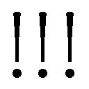

| 君が僕を3 こんなもの誰が買うの？ (ガガガ文庫) | |
| 中里十 | |
| 株式会社小学館 (2016) | |
小学館ｅＢｏｏｋｓ
君が僕を ３ こんなもの誰が買うの？
中里 十
イラスト 山田あこ
登場人物
橘淳子......主人公。中学三年生当時の物語を回想として語る。
絵藤真名......淳子の同級生。「恵まれさん」をしている。
長谷川縁......淳子の同級生。女子校の王子様。真名とはただならぬ因縁がある。
橘れのあ......淳子の継母。先月に結婚したばかり。大学二年生。
内井アキ......れのあの恩師。淳子の父を芸術家として高く買っている。二十五歳。
この世に生まれた赤ん坊の役割は、確かに職を手につけて働くことであろう。しかし、すべてのものごとの判断基準をその〝有用性〟だけにおき、生を受けたことの有用性は生きていくために働くことというのなら、それは不毛な循環理論にしかならない。
──リチャード・ドーキンス著、福岡伸一訳『虹の解体』（早川書房、二〇〇一年）
こんにちは、淳子。愛してるよ──友達としてね。
毎日夢を見る。色の付いた夢。五感を刺激し続ける、まるで現実のような、ひどい悪夢──なんてね。噓だよ。
私は夢なんか見ない。そもそも眠るかどうかさえ怪しい。もし私が眠るとしたらそれは、生理的な睡眠じゃなくて、永遠の眠り、つまり死のようなものだ。あなたが私のことを思い出すたびに、私はこうして生き返ってしゃべりだす。あなたに忘れられているあいだは、私は死者の仲間だ。
死者といえば、こんななぞなぞがあるね。「生者と死者と、どちらが多い？」。答えは生者、なぜなら死者はもういない。ほら、私にぴったりじゃないかな？
とはいえ、やっぱり私は、眠るような気がするんだ。
人間は、毎年毎日毎秒、変わってゆく。誰でも一晩眠れば、眠る前とは少しだけ違う人間になる。そして私も、眠っているあいだに、変わる。だって淳子、あなたは我が創造主、あなたが日ごとに変わってゆくのに、あなたの被造物たる私が、同じままでいられるはずがない。
死者は変わらない。もし死者なんてものがいるとすれば、だけどね。
「いるとすれば？ いるのかいないのか、はっきりさせて」
さっきのなぞなぞは、シリーズ物でね。あれの続きには、こんなのがある。「生と死と、どちらが強い？」。答えは生、これほどの世の悪にも耐えている。淳子はどう？ 世の悪に耐えている？
世の悪に耐えることもなければ、夢を見ることもない私が、いったいなにを決められるっていうんだろうね。
私はなにも決めたりしない。......ああ、もちろん淳子、あなたが望むなら別だよ。私が決めたようなふりをして、あなたの望むとおりにしゃべる。でも淳子は、そんなものが見たい？ なにを望むかは、最初によく考えたほうがいい。望みがかなってから考えても遅い。
さて、これくらいしゃべれば、久闊を叙したことになるんじゃないかな。
そうそう、言い忘れたことがひとつあった。『毎日夢を見る。色の付いた夢。五感を刺激し続ける、まるで現実のような、ひどい悪夢』──これは笙野頼子だよ、『レストレス・ドリーム』の冒頭。
私の知識はすべてあなたの知識なんだから、そんなことはわかりきってる？ 人間は変わってゆく、と私はさっき言ったね。記憶も変わってゆく、覚えたり忘れたり。いつか淳子は、『レストレス・ドリーム』のことを忘れるかもしれない。たとえそうなっても、淳子は私の友達だ。友達を仲間外れにしておしゃべりするわけにはいかないだろう？
私の知識はすべてあなたの知識だ。でも、もしかすると私は、あなたの忘れたことを知っているかもしれない。
ということは──あなたが忘れたふりをしていることを、私はしゃべるかもしれない。
さらにだ──私のおしゃべりのなかに、根も葉もないまるっきりの幻聴が、空耳で聞こえるかもしれない。
忘れたことなのか。忘れたふりをしていることなのか。それとも空耳なのか。それは淳子、あなたが決めるんだよ。死者がいるのかいないのかを決めるようにね。
＊
ときどき縁をうらやましく思うことがある。
彼女は、私の頭から外には出られない。食べることもなければ飢えることもなく、夢さえも彼女には訪れない。
そのかわりに彼女は、自分自身から自由だ。死者がいる世界といない世界の両方に、同時に立つことができる。彼女はなにも決めない。
私にはそれはできない。たとえば信仰について、なにも決めずに生きてゆこうとしても、不可知論者だの無神論者だの無宗教だのというカテゴリーに押し込もうとする人々に出くわす。こういう人々に対しては、縁のように「もし私がキリスト者だとすれば」などと語ってみても、話が通じないだろう。
それに、自分の実際の振る舞いを反省してみると、食事の後に「ごちそうさま」と唱えたりしている。これは、儒教なのか仏教なのかわからないけれど、宗教と関係がありそうな気がする。
食べることのない縁は、「ごちそうさま」と唱えることもない。彼女はなにも決めない。
決めざるをえない世界で、私は生きる──でもそれはどれくらい本当だろうか。生涯のあいだ年中無休で二十四時間、一秒も途切れることなく、決めざるをえない世界が続いているのだろうか。そんなはずはない。
娘が前に、学校でこんな事件があったと話してくれた。授業中に同級生が、寝ぼけたかどうかして、教師のことを間違えて「ママ」と呼んでしまった、と。
ほんのちょっと寝ぼけるだけで、この世界には裂け目が生じる。裂け目、としか言いようのない、なんの説明もつかない瞬間が、私の過去にも、存在する。
学校の「ママ」事件のことを話してくれたとき、娘は笑っていた。本人にとってはいたたまれない裂け目が、他人にとっては物笑いの種になる。
だから、私のあの瞬間も、喜劇になるはずだ。
けれど私は今も、あの瞬間の続きを生きている。私の口からは今でも、なんの説明も出てこない。いたたまれない思いを抱えて、黙りこくるしかない。
あの瞬間を、喜劇として語ることのできる縁を、ときどきうらやましく思う。
＊
どうしたの淳子、いつもみたいに、近況を知らせてくれると思ったのに。あなたの暮らしぶりを聞かせてもらうのを、いつも楽しみにしているんだよ。
もしかして、私の真似をしてるのかな？ いくら私がうらやましいからって、そんなところを真似てもしょうがないよね。私が自分の近況を話さないのは、私には生活なんてものがないからだよ。どうしても私の真似がしたいっていうんなら、生活を召使いに任せておけばいいんじゃないかな？ 冗談だよ。
私は近況ひとつ話せないような身の上だけれど、自分の運命を楽しんでいる。あなたにも、もしできることなら、自分の運命を楽しんでほしい。
＊
しばらく、考えあぐねていた。はたして私は、腹を立てるべきなのかどうか。
『自分の運命を楽しんでほしい』。常に百パーセント正しい、けれど百パーセント無責任な、このアドバイス。どうやって縁に伝えればいいのだろう、自分の運命を楽しむのが不可能な場合がある、ということを。
子供向けのまんがは戦いに満ちている。戦いといっても、相手は悪の組織とは限らない。恋する相手を自分に振り向かせようとしたり、スポーツで栄光をつかもうとしたり、つまり、困難を克服する、という物語だ。
もし戦ったのなら、たとえ敗れても、自分の運命を楽しめるかもしれない。けれど、勝ち負け以前に、そもそも戦うこと自体がありえない、そんな困難がこの世にはある。たとえば、「ママ」事件を起こしてしまった子供はきっと、そのいたたまれなさと、戦うことができない。ただひたすら、やりすごすしかない。
どうやって縁に伝えればいいのだろう──でも、私が十五歳のときには、どうだったか。
父が後妻と結婚したばかりのころ、彼女の不幸な生い立ちのことを父から聞かされて、私はこんなことを言った。
「でも、ハッピーエンドなんじゃない？ 今はお金持ちで、東大で、誰もれのあさんをぶったりしないし」
父はさすがにわかっていた。
「お前、絶対に、れのあの前でそういうことを言うなよ」
「どうして」
「わからんだろうな。だからだ」
父は少しも腹を立てなかった。言うべきことだけを言った。理解を求めようとはしなかった。
私も父に倣う。
＊
そんなこと言ったって、現に怒ってるじゃないか、淳子は。さっき私が催促したのに、近況を知らせてくれないし。
ま、いいさ。誰にでも機嫌の悪いときはあるよね。......なんて言うと、またあなたを怒らせるかな？ でも言わせてもらいたいな。これはちょっと大事で、ちょっと難しいことなんだよ、『誰にでも機嫌の悪いときはあるよね』で済ませるっていうのは。
もし人の気持ちがなんでもわかるのなら、それに越したことはない。じゃあ、なんでもわかろうとするのは、どう？ そういうのって、息苦しくて、うざいんじゃないかな。『わかる』と『わかろうとする』は大違いだ。
だから淳子も、そんなにむきになってわからせようとしないで、いつもみたいに昔の話をしてほしい。
あれは三学期の期末テストの初日だったね。夜、恵まれ講の懇親会があって、あなたは真名の執事になった。その帰りにあなたは、真名を家まで送っていった──
耳が火照っている。寒い夜道を歩いて冷えたあとに、部屋のなかで温まったせいだ。
......そうじゃない、本当は──
膝が震えている。転ぶ寸前くらいのぎりぎりのバランスで立っているせいだ。
......どうしてそんな危なっかしい体勢でいるのかというと──
自分のしていることが、よくわからない。
腕のなかに、真名の小柄な体があるというのが、よくわからない。
真名の顔がとても近くにあるというのが、よくわからない。その唇が、私のと重なっているというのが、よくわからない。
よくわかることもある。たとえば、真名が好きだということ。
でも、好きだからといって、こんなことをするのはなぜなのか、よくわからない。
よくわからないままに、とりあえず唇を離して、真名の体をさらに深く抱きしめる。やっぱり、よくわからない。
「ね」
なにかを尋ねたい。でも、なにを。
これからどうすればいいのか、知っている。前にもしたことがある。布団を敷いて、服を脱いで。でも──なにが『でも』？ よくわからない。
真名はなにも言わず、身動きもしない。前は真名から誘われた。もし誘われれば、よくわからないままに、従ってしまうだろう。
あまりにもたくさんのことがよくわからなくて、どうすることもできずにいた。
耳の火照りを感じなくなったころ、私の携帯から着信音が鳴った。
無視しようかと思ったけれど、真名が言った。「電話」。それで私は腕をほどいて電話に出た。かけてきたのは、れのあだった。
「さっき言うの忘れてたんだけど、帰りにコンビニでみりん買ってきて～。あ、みりんじゃなくて、みりん風調味料でいいや。未成年はお酒買えないんだよね～」。私が生返事をすると、れのあは声の調子を鋭くした。「るっち、今どこ？」。
「まだ真名の家」
「さっさと帰れって言ったよね～？」
私は返事をせずに電話を切った。ついでに電源も切る。
どうしようかと考える。今度は、よくわかった。
「帰るね」
真名はうなずいた。
＊
帰り道にあれこれ考えた。考えているような気がした。でも、気がしただけで、実際はただ熱に浮かされたようにぼんやりしていただけだった。それでも、頼まれた買い物はちゃんとしていった。
「ただいま」
すると、れのあが自分の部屋から顔を出して、
「おかえり～。るっちは沖縄行く？ 行くよね」。沖縄？ なんで？ と面食らう。でもすぐに思い出した。父が今、沖縄にいるのだ。前には私から沖縄旅行を持ちかけたこともある。「るっちの春休みはいつから？」。
「今週の金曜から」
れのあはしばらく不思議そうに目をぱちくりさせていた。それから目を丸くして、
「......伝説の試験休み！」。伝説ね。公立に行った友達からはうらやましがられる。でも、いいことばかりじゃない。「そういえば、るっちは土曜も学校行ってるもんね～」。そういうこと。「そしたら、一緒の便で行こ～。来週の月曜」。私をほっといて自分ひとりで先に行くつもりだったらしい。ずいぶん強引だ。
強引といえば、みりん風調味料。さっき電話で頼まれて買ってきたのに、れのあはそんなことはすっかり忘れたみたいに、私の顔を見るなり沖縄の話を始めた。
「どうしてそんなに急いでるの？」
「早く予約しないとチケットが取れないでしょ～？ 春休みは飛行機が混むんだって聡さんが言ってた」
一応、筋は通っている。でも、だからって、買い物を頼んだのを忘れるほど急ぐ？
うさんくさくはあるけれど、つついてもぼろを出しそうにない。沖縄に行くのは賛成なので、
「じゃあ、それで──ちょっと待って」
真名のことをどうしよう。
＊
商売の仕組みというのは、外から眺めているだけだと、なかなか実態が見えてこない。
恵まれ講のことも、私は誤解していた。恵まれさん──つまり真名──が広告のような働きをして、メンバーの店を儲けさせる、というのが恵まれ講の仕組みだと思っていた。
執事を引き継いでみて、わかった。もし恵まれさんが広告だとしたら、広告主をだまくらかすのが一番の仕事なのだ。
コムズ白山のテナントが恵まれ講のメンバーになるときには、出資金を払う。出資金の額はテナントスペースの賃料にだいたい比例していて、小さなところほど安い。出資金はお布施の現物で払うこともできるけれど、これは真名が希望する商品でないといけない。テナント以外にもコムズ白山自体も出資金を出していて、これが総額の三分の一くらいだから、割合としては一番大きい。
社の造営費、講の経費、真名の学費や家賃や光熱費それに家財道具の大部分が、講の会計からまかなわれている。会計残高と、あれこれの支出状況から計算すると、お金をもっと集めないことには、講はあと半年しか持たない。
お金を集めるには、メンバーに「出してください」とお願いするか、それとも新しいメンバーを増やして出資金を払ってもらうか。いずれにせよ、根拠が欲しい。「これだけ儲かってますよ」と示したい。
でもそれは不可能だ。恵まれさんみたいな地味な広告は、効果が測れない。もしテレビの有名番組で取り上げられたりすれば、お客がどっと押し寄せてくるだろうから、効果が目に見える。でも恵まれさんではそうはいかない。
はっきりと数字を出せるのは、お布施のもたらす売り上げだけ。真名の集めるお布施、つまり食料やら服やらの諸々は、今までの実績だと、金額にして月に十五万円というところらしい（これはすごい成果だと思う。出す人って、いるところにはいるのだ）。店のマージンがざっと三割として、メンバーの得る利益は月に約五万円。ぜんぜん足りない。真名の学費や家賃は、一か月当たりで計算すると十五万円以上かかる。足りない十万円は、根拠はないけれど広告としての効果に期待、ということになる。
足りない分が十万円でも十二万円でも、大した違いじゃない。そういう意味では、真名の実績はあんまり意味がない。一番大事なのは、「広告としての効果」で説得する、つまり、根拠のない期待を抱かせること。煎じ詰めれば、だまくらかすこと。
コムズ白山恵まれ講がこんな仕組みになっていると知ったとき、私は縁に尋ねた。
「こんなの、ほとんど詐欺じゃない？ どうしてメンバーが集まったの」
縁は鼻で笑った。
「真名があれだけ真面目にやっているのを見て、詐欺だと思う人なんているのかな？」
「......詐欺は言いすぎたけど、こんなのにお金を出すなんておかしい」
「理屈と膏薬はどこにでもつく。おかしいっていう理屈もつくだろうし、おかしくないっていう理屈もつくだろうね。
ここ何十年か、恵まれ講は日本じゅうのどこにもなかった。もし恵まれさんが、広告として効果の高い、割りのいいものなら、こんなに長いこと廃れっぱなしのはずがない。ということは、恵まれさんって、広告としては割りに合わないんじゃないのかな？ ほら、おかしいっていう理屈がついた。
でも、恵まれさんになれる、なろうって人は、そうそうどこにでもいるわけじゃない。恵まれ講を立ち上げたいって人も、ちょっと前までは、珍しかっただろうね。今では真名のことが話題になったから、あちこちにそういう人がいるだろうけれど。恵まれ講を立ち上げるには、珍しい人材が二人揃う必要があったわけだ。盲亀の浮木、ってほどじゃないにしても、何十年かに一度の出来事かもしれない。ほら、おかしくないっていう理屈がついた。
ここからさらにまた、おかしいっていう理屈をつけてもいいけれど、聞きたい？ ......そりゃそうだ」
盲亀の浮木というのは、仏教の経典に出てくる喩え話だ。大海原で、盲目の亀が海面に頭を出そうとしたとき、そこにたまたま浮木があり、その浮木にたまたま大きな穴が空いていて、しかも穴はたまたま海の底を向いていて、その穴に亀の頭がすっぽりと入ってしまう、それくらい稀な巡り合わせのこと──という説明をあとで縁から聞いた。
縁の無駄話はさておき、私はお金を集めなきゃいけない、コムズ白山恵まれ講の執事として。
＊
さて、無駄話の続きをさせてもらおうかな。
あなたはお金の流れの話ばかりしていたけれど、リスクのことも考えないとね。恵まれ講には、どんなリスクがあると思う？ 私が思うに、真っ先に目につくのは、恵まれさんがすぐに辞めてしまうというリスクだ。なにしろ、ここ数十年は経験者がいないんだ、そういうリスクがどれくらいあるかなんて見当もつかない。真名の場合は、ああいう事情があるから、そう簡単には辞めないだろうと思ってもらえた。
真名が恵まれさんになったのは、一月上旬のことだったね。三月上旬の現時点で、すでに二か月間、立派に務めつづけている。これは大事な実績だよ、集めたお布施のちょっとした多寡なんかよりも、ずっと。
真っ先に目につくリスクが小さくなった現時点では、立ち上げ当初にくらべて、講に入ることの魅力は大きくなったはずなんだ。この前の懇親会で、「なかなかメンバー増えないねえ」とかぼやいてた人がいただろう？ 増えていいはずなんだ。ああ、もちろん、増えるわけがないっていう理屈もつけられる。聞きたい？ ......そりゃそうだ。
『商売の仕組みというのは、外から眺めているだけだと、なかなか実態が見えてこない』。仰せのとおりだよ、淳子。でも、ひとつ付け加えさせてほしい──中で働いても五十歩百歩だ。
＊
恵まれ講の執事として、私はお金を集めなきゃいけない。そのために講のメンバーを増やす、つまり勧誘する。でも、どうやって。
そして、私の沖縄旅行のあいだ、真名のことをどうするか。
両方まとめて解決する方法を、私はひらめいたのだった。
ひらめいた結果──五日後、私は沖縄のリゾートホテルのロビーにいた。
「疲れた～。ここ、リゾートのくせに空港が遠すぎ～」
ソファに腰かけて背伸びしながら、れのあがわめいた。夜のロビーは、波の音がかすかに遠くから聞こえるだけで、しんと静まり返っている。れのあのわめき声は、ホテルの従業員の耳にも届いただろう。私は恥ずかしくて顔を伏せた。
「自分で選んだホテルでしょ？」
空港からレンタカーでここまで一時間ちょっと、れのあが運転してきた。飛行機に乗ったあとに運転だから、疲れただろうとは思う。私も少しめまいがする。とはいえ、それをホテルのせいにするのはおかしい。
「そういうこと言っていいのは、選んだ本人だけ～」
開き直りもここまでくるといっそすがすがしい──なんてことはありえない。私は二の句が継げなかった。
「橘様、お待たせしました。こちらにご記入をお願いします」
ホテルの従業員がチェックインの書類を持ってきた。れのあが欄を埋めるのを横から見ていたら、『新婚旅行』という項目に印をつけた。新婚旅行？ そりゃ確かにそうかもしれない、だからやめろとは言えない。でも夫婦が一緒じゃないのにこんな印をつけたら、ホテルの人が混乱するだろう。
従業員が書類を受け取って目を通すと、やっぱり尋ねてきた。
「新婚旅行とのことですが、ご結婚なさいましたのは、どなたとどなたでしょうか？」
れのあは私の肩を抱こうと手を伸ばした。私はすかさず、れのあの耳たぶへと手を伸ばした。
れのあは私を抱き寄せて、「この子と私──」。私は間髪いれずにれのあの耳たぶをつねりあげる。「──やめてやめてやめて」。従業員がものわかりのよさそうな微笑を浮かべる。私は床に目を落としながら釈明した。
「この人は先日、私の父と結婚しました。父は今、沖縄に滞在中でして、私たちは観光も兼ねて父に会いに来たんです。ですから新婚旅行というのは本当です」
「さようでございましたか。橘れのあ様、ご結婚おめでとうございます」。従業員の顔に浮かぶ、ものわかりのよさそうな微笑が、かえって私をいたたまれなくさせる。「こちらのお連れ様が、橘淳子様でいらっしゃいますね。そうしますと、そちらが絵藤真名様でよろしいでしょうか？」。
真名はうなずいた。
＊
解決策──真名を沖縄旅行に連れてゆく。
れのあが沖縄旅行の話をした翌日の朝、学校へ行くバスの中で、真名に訊いてみた。
「恵まれさんの仕事、来週の月曜から金曜まで休める？ 試験休みに、母が旅行をお布施してくれるって、沖縄のリゾート」
「淳子と一緒の旅行？ ......休める」。真名は嬉しそうに微笑んだ。
「ほんと？ 無理してない？」。真名がどれくらい仕事を休んでいいものなのか、私にはわからない。とはいえ、昔の恵まれさんの体験談なんかを見ると、商店会の親睦旅行についていったりしたらしい。真名も同じようにしていいはずだ。
真名は微笑むのをやめて、私の目をまっすぐに見つめた。
「淳子は？」
「私？」
「無理しないで」
なんのこと？ と問い返そうとして口を開く。でも、声を出そうとした瞬間、やめる。きっとうまくしゃべれない、と気づいて。口を閉じ、黙ってうなずく。
沖縄リゾート五日間に、家族以外の人を丸抱えで連れてゆくだなんていう、羽振りのいい芸能人みたいな真似、我が家の金銭感覚では考えられない。どう見たって、無理していないはずがない。
「......でも、嬉しい」
ふたたび真名が微笑む。一重まぶたの目が細く伸び、睫毛の下で瞳が輝く。
真名を喜ばせるためだけでも無理したい。しかもこの計画には、狙いがもうひとつある。よっぽど無理でも、試してみないわけにはいかない。
もうひとつの狙い──コムズ白山の旅行代理店を、講に勧誘する。
その日は、学校の帰りのバスを、コムズ白山の近くのバス停で降りた、真名と一緒に。
「買い物？」。真名が尋ねた。我が家の最寄りのバス停はもっと先にある。
「うん、ちょっとね。真名はすぐ仕事？ ......じゃあ、お社で待ってる」。勧誘のことを話すのは後回しにした。真名の驚く顔が見たい。
真名は仕事の前にいったん家に帰って着替えるので、バスから降りてすぐに別れる。私はコムズ白山に入り、真名の社に向かう。社に着くと、れのあは先に来ていた。
「おっそ～い。誰のわがままにつきあってあげてると思ってんの～？」
時計を見ると、待ち合わせの時間より少し早い。ちょっと考える、下手に出るべきかどうか。答えは、ノー。
「つきあうのが嫌ならやめて。ママが協力してくれないんなら、こんなのうまくいかない」
「そ～んなこと言ってないでしょ～？ デートで女の子を待たせといて、ただで済むと思ってんの～？」
女同士で待ち合わせたら、必ずどちらかが待たされる。しかもこれはデートじゃない。でもそこを突っ込んでいたらきりがない。
「なに、税金でもかかるの？ それじゃ今度からは男の子になっといて」
どこがそんなにおかしかったのか、れのあは大笑いした。
二人でコムズ白山の旅行代理店に行く。こぢんまりとしたカウンターの向こうにいる従業員に、勇気を出して話しかける、
「ごめんください。私、コムズ白山恵まれ講の執事をしております、橘と申します。店長にお取り次ぎ願えませんでしょうか」
自分でしゃべっていて、ありえない、と思った。執事だなんて肩書きを、講のことを知らない部外者に向かってしゃべるのも辛いし、それになにより、大人の物真似みたいな口の聞きかたをするのが辛い。ぜんぜん板についていなくて、これじゃ幼稚園の学芸会よりもひどい。わきの下から汗がだらだら流れる。
それでもなんとか店長に話を聞いてもらえた。沖縄リゾート五日間三名のツアーをここで買うかわりに、講に入ってほしい、と。相手は、ずっとにこにこ顔のまま、表情を変えずに聞いていた。慇懃に断るつもりの顔だ。ここまでは予想どおり。
話の最後に、沖縄リゾート旅行のパンフレットを開いて、決めゼリフをぶつける。
「ホテルは四泊全部ここです」
定価なら一名一泊で最低三万円はかかる、国内最高級のリゾートホテルだ。オフシーズンのツアーだから、だいぶ割引になるけれど、それでも値段は半端じゃない。旅行代理店に入るマージンはおそらく、講の出資金の三分の二かそれ以上になる。
できることならば真名の分、つまり二名と三名の旅行代金の差額を、旅行代理店からのお布施にしてもらいたかった。講の出資金はお布施で支払うことができるので、旅行代理店の負担は実質的に変わらないし、我が家の負担はゼロになる。でもそれだと、講にお金が入らない。だから、旅行はこちらでお布施して、旅行代理店には講に出資金を入れてもらう。
このとき初めて店長のにこにこ顔が崩れ、眉間に皺が寄った。
「どうかご検討ください。もし受けていただけるのでしたら、今日の午後三時までに名刺の電話番号にお返事をください」
「ああ......わかりました、では、ありがたくお話に乗らせていただきます」
「ありがとうございます。では続きは母とお願いします」
後をれのあに任せて、私は社に向かった。もうすぐ真名が来るはずだ。
社には誰もいなかった。自販機でコーヒーを買い、ベンチに腰かけて飲む。最初のうちは、紙コップを持つ手が震えていた。だんだん緊張がほぐれてくる。気分がふわふわしてくる。
大成功だ。一石二鳥の大成功。きっと真名も喜んでくれる。恥ずかしいくらい顔がにやけてしてしまう。恵み札をチェックするのも忘れて、私は浮かれていた。
真名の姿が見えると、私は小走りに駆け寄った。
「ツアーズオフィス東日本（旅行代理店）さんが講に入ってくれるって！」
真名は驚いたように目を見開いて、何度かまばたきし、それから、顔を横にそむけた。唇をきゅっと引き結んでいる。なにか考えているときの顔。
え、なに？ 喜んでくれないの？
とまどう私に向き直り、真名は尋ねた。
「旅行の施主は、れのあさん？」
私がうなずくと、
「講に入ってくれたら、三人の旅行のチケットをここで買う、っていう条件を出した？」
静かな、優しい、なのに厳しい声だった。私はおずおずとうなずいた。
「それはだめ。もう二度と、そういうことはしないで」
「どうして」
「恵まれ講は、お金では恩返ししない。誰に対しても」
恵まれさんへのお布施は閻魔大王の裁きに効く、ということになっている。個人はそれでいいとしても、そんな話で営利企業が動くわけがない。
「でも、お金を集めなきゃ。講のお金、あと半年で使い切っちゃうんだよ？」
「講に関わる人はみんな、信じてくれてるの。お金の損得で講をやるわけじゃない、って。
淳子のやったことは、そういう人たちを裏切ること」
真名の仕事姿、明るい茶髪のロングソバージュに、緑のタートルネックのセーター、首から下げた携帯とＩＤカード。すっかり見慣れたカジュアルなこの姿が、今はまるで礼装の軍服のような威厳を帯びて目に映る。
頭がぐらぐらした。貧血になりそうだった。というより、なりかけていた。手足が石みたいに硬く冷たい。
「......ごめん」
硬く冷たくなり、ろくに言うことをきかない足をひきずるように動かして、転びそうになりながら、私は逃げ出した。
飲みかけのコーヒーをベンチに置きっぱなしだった、と途中で気がついた。戻らなきゃ、と思って立ち止まり、そのままその場で動けなくなった。
よく考えてみると、いじめられているような気がする。『お金の損得で講をやるわけじゃない』って、そんなこと、言われなければわからない。そりゃ真名に黙って事を進めたのは悪かったし、そこを責められるなら納得もするけれど、あんなことを言われても──
そうじゃない、こんなの言い訳だ。今やらなきゃいけないのは、言い訳を並べることじゃなくて、真名と善後策を話し合うこと。
そのとき、携帯に電話がかかってきた。真名だ。
「今どこ？ ......さっきはきついこと言ってごめんなさい。それに、噓もついた。
講の関係者全員が、あんなことを信じてくれてるだなんて、噓。だって、淳子が信じてくれてない。きっとほかにも、そういう人はたくさんいる」
真名の気持ちがわかるような気がした。信じてもらうことが真名の仕事なのに、私は信じていなかった。だから、あんなに怒ったんだ。
「そんなの、もういい、私は大丈夫。それよりツアーズオフィス東日本さんのほうはどうすればいいの？」
「なにもしないで。相対で決めた話なら、言いふらされたりしない」
真名が言うには、当事者同士で決めた話は原則として外に漏らさない。たとえば、プロスポーツ選手の年俸が「推定」で報道されるのは、そういうことだという。
「さっきは本当にごめんね。じゃ、──」、また明日ね、と挨拶して電話を切ろうとすると、
「待って。
淳子と旅行に行けるの、楽しみにしてる。すごく」
真名は嬉しいときでも、はしゃいだ声はあまり出さない。でも、嬉しいときの声はちゃんとある。意思を告げるときの明晰な声とは違う、ひそやかな、内緒話でもするような声。その声を聞いて、気持ちが軽くなる。思わぬ問題はあったけれど、でもやっぱり、やってよかった。
「旅行の道具、お布施してもらうのを頑張る」
浮かれた気持ちを、少し冷まされる。旅行に使うものを揃えるには、かなり苦労するかもしれない。
苦労といえば、私のほうにもまだひとつ、苦労が残っていた。
最後の一苦労──父をごまかす。
その日の夜、れのあが父に電話をかけた。リゾートホテルに宿を取った、という話を父にする。もちろん真名のことは隠す。
「だぁって～、昼間はるっちがいても別にいいけど、夜は聡さんと二人っきりがいいんだも～ん。るっちも、せっかくの沖縄なんだから、街中のマンションなんて嫌だって。リゾートホテルがいいって」
父は今、短期滞在用の家具つき集合住宅を仮住まいにしている。れのあは四泊のうち二泊をそこで過ごす予定だ。私と真名は四泊ともホテルで過ごす。
電話には私も出て、新婚の二人に気をきかせた、というような言い訳をした。父は、「リゾートなんか旅じゃない」とかぶつぶつ言っていたけれど、キャンセルしろとまでは言わなかったし、こちらの説明を疑っている様子もなかった。
電話を切ると、れのあが嬉しそうにわめいた。
「リゾ～ト～！」
沖縄行きはもともとは、父の仮住まいに滞在するという話だった。それを、リゾートホテルに泊まりたくない？ と持ちかけたのは私だ。
れのあと私が手を組んで、リゾートホテルに泊まるツアーを予約してしまい、父からは事後承諾を得る。私が父への言い訳に協力するかわりに、れのあは、父に内緒で真名を連れていくのに協力する──という筋書きだ。
最後のハードルをクリアして、私もほっとした。そこへれのあが、
「るっちの苦労はこれからよね～」。なにそれ。「るっちが聡さんと一緒のあいだ、あの恵まれさん、旅先でひとりぼっちでしょ～？ るっちは気が気じゃないよね～？」。
この計画を思いついたときには、真名はあんな性格だし、リゾートだから暇潰しには困らないし、と思って気にしなかった。でも今になって考えてみると、計画にのめりこむあまり、無責任なことをしたように思えてくる。旅行代理店をあんな風に講に勧誘したのは、私の暴走だった。これもそうじゃないの？
たとえそうだとしても、今さらどうしようもない。八つ当たり交じりに、れのあの顔をじろっと睨むと、意地悪そうに笑い返してきた。
一日目は、ホテルに着くなりすぐに寝た。そして二日目。
朝食のあと、父がホテルまで迎えに来て、れのあと三人で水族館に行ったりした。夜になってから私だけバスでホテルに戻り、部屋のドアをノックすると、ドアが開き──
「お帰りなさい」
感動した。
真名の笑顔や声が安らかで、なにも悪いことは起こらなかったらしいとわかって、感動した。
『お帰りなさい』だなんて、まるで真名と家族になったみたいで、感動した。
真名が着ているのが、ホテル備え付けの白いパジャマとガウンで、その格好の目新しさや緩さに、感動した。
ただ単に、真名がそこにいるということに、感動した。
「......ただいま」
「お腹すいた。すぐ着替えるから、待ってて」
このホテルはやたらと敷地が広くて、プライベートビーチだのコテージだのコンベンションセンターだのがある。当然レストランもいくつかあり、今日の夕食は中華にした。敷地内を巡回する遊園地風のマイクロバスに乗ってレストランに行き、星がプラネタリウムみたいによく見える夜空の下のテラス席につき、それぞれ料理を単品で注文し──そこまではよかった。
このチャーハン、なんでこんなに量が多いの。高級リゾートだから料理も大盛り？ とはいえ普段の私なら、残さずたいらげていたかもしれない。こんな高い料理を残すのはもったいない。でも今日はだめ。皿を半分も空けずにスプーンを置いたら、
「食欲ない？」
気遣わしげに真名が尋ねる。
「夕方にちょっと食べちゃったから入らない」
本当は、一時間くらい前に、お腹いっぱい食べてしまった。父が三人での夕食を主張して、どうしても逃げられなかった。
私が逃げようとするのに、れのあも協力してくれた。「夕ご飯はお酒、飲みたいな～。るっちだけお茶だとかわいそうでしょ～？」とか。でもこういうのは父には効かない。平然と「いや、俺も飲まない」。父には、人につられる、ということがないのだ。
「......夕ご飯、ご両親と食べてきた？」
ばれた。これ以上は噓を重ねることもできず、私は顔をそらした。
「無理しないで」
また言われてしまった、『無理しないで』。私はうなずくしかなかった。
私の噓に気を悪くすることもなく、真名は楽しそうにリゾートの一日を語った。
「砂浜の砂が、みんな珊瑚でできてるみたい」
私は前に、グアムのそういう砂浜で泳いだことがある。泳ぐとき裸足で歩くと痛かったりして、あんまりいい印象がないのだけれど、真名にとっては新鮮らしく、目を輝かせている。いくら沖縄とはいえ、三月の海では寒くて泳げないから、いい思い出だけ持って帰れるだろう。
「怪しい人と知り合ったの。『私、怪しい者じゃありません』って自分で言って、私が黙ってたら、『突っ込んでよ！ それ怪しいって突っ込んでよ！』だって」。それは怪しい。
二十代半ばの女性で、ちょっと変わった眼鏡をかけていたという。恵まれさんをしているだけあって、真名は仕事以外のときでも、しょっちゅういろんな人から話しかけられる。
夕食を終えて部屋に戻ると、もう寝る時間が近づいていた。今晩はあんまりゆっくりできないな、とそのときは思ったけれど、結局はだらだらしてしまった。
交替でお風呂に入ってから、お互いの髪を乾かす。二人で観光本を見ながら、ここが面白そうとか話し合う。ホテルのテレビに入っていた衛星放送の珍しい番組を、ついつい最後まで見てしまい、寝る時間を過ぎてしまう。ホテルの外で買ってきて持ち込んだウーロン茶（ホテルの中は値段が高い）を飲みつつ、大きなベッドの上に二人で寝そべって、なんだか修学旅行の超ハイグレード版みたいな気分で、やたらと爆発する実験ばかりのアメリカ製の科学番組を見ていた。
番組が終わってテレビを消すと、部屋がいきなり広くなったような気がした。眼鏡を外してサイドテーブルに置き、仰向けに寝転がる。天井のシーリングファンが目に入る。音を立てずに、でもそれなりのスピードで回っている。
明日の夕食までは、真名と二人きりで過ごせる。明日は屋内プールでくたびれるまで泳いで、昼寝して、コンベンションセンターのカフェに行って、ホテルの近くのちょっとした街に出て──
ベッドの上に投げ出した右手に、なにかが触れた。なにげなく目をやる。
真名が、自分の手のひらを、私のに重ねていた。
＊
あ。
そういうのを全然忘れてたわけじゃなくて、その、なんていうか、たくさんの選択肢のなかで？ そう、たくさんの選択肢のなかで、そういうのを真っ先に選ぶっていうのは、その、なんていうか、誤解を招きやすい？ もちろん、それが自然な状況なのにあえて選ばないっていうのも、別の誤解を招くっていうか、コミュニケーションに齟齬をきたしてる感じではあるけれど、そんなに、これが第一選択、みたいな状況ではなかったわけじゃない？ そもそもどうして私がテレビをつけたのかというと、真名がトイレに行ったときで、ここのトイレって音姫がないから水を流すしかないでしょう、でも沖縄って慢性的に水不足なの知ってる？ 音姫がないのってホテルの設備としてどうなのかなあ、エコとか節水とか気にしないのがリゾートってことなのかなあ、とか思うけれど、でも個人的には節水に協力したいわけよ、でもトイレに入ってる人ができることってないわけで、外の人がやるしかないわけで、そしたら、テレビをつけるっていうのは、手近でわかりやすい方法じゃない？──
あ。
真名が左の手のひらも、私のに重ねた。
真名の顔が、私の胸の上にある。
ほら、もう夜遅いでしょ、私はだいぶ眠いし、真名はどう？ せっかくのリゾートなのに、朝起きられなかったら損した感じだし、そういえばこのホテルの朝食って七時からなんだよね、早い時間に行ったほうがいい席に案内してもらえるだろうし、あと沖縄って西のほうにあるから日の出入りが東京よりずっと遅いんだよね、なんかこれって、日のある時間を有効に使いなさいって言われてる感じ？ それに眠いときにそういうことするのって、やらされ感があるっていうか、集中力にも欠ける気がするし、そう、集中力って大事で、だってＲＰＧの経験値稼ぎみたいなモードになってる人たちはテレビでも見ながらするのかもしれないけど（二十二年後から一言──しません）、私はまだ一回しか経験のない準未経験者で、これからの一回一回に集中したい時期というか、正直言って集中しててもなにがなんだかほとんどわからない状態で、できるだけ計画的に準備して集中力を高めて、そうそう計画ね、明日プールで泳いだ後なんてどう？ って、そういう計画は頭のなかで考えるだけでも死ぬほど恥ずかしいな！ こういうのが恥ずかしいって今初めて知ったんだけど、これっていったいどういう──
あ。
真名の顔が、近づく。
唇同士が触れる。そして真名の唇が告げる、
「おやすみなさい」
目の前に、かすかに微笑みが浮かぶ。野生動物のような。
「......おやすみなさい」
真名は自分のベッドにもぐりこんで、サイドテーブルの明かりを消した。私も同じようにする。
真っ暗な天井を見つめていると、目が慣れてきて、白いものが目に映る。シーリングファンだ。音もなく回っている。私の頭も、明日のことを考えて、音を立てずにぐるぐると回る。
明日のことといっても、それはついさっきまで考えていたような、プールで泳いだりコンベンションセンターのカフェに行ったりする一日の計画ではなく、それよりもずっと短い、けれどこうして考えていると一日よりも長く思える、そもそも考えても仕方ないような、そういう時間のことだった。
＊
やっぱり私は向いてないのかもしれない。
ずっと前から薄々、気づいていた。好きとか特別とかいうのと、こういうのは、別なんじゃないかと。たとえば親子や姉妹だって特別な絆だけれど、こういうのとは別のところにある。
お互いにとても惹かれると思ったら、実は生き別れの異母姉妹だった──なんて話が、昔の少女まんがにあった。私と真名も、そうなったらいいのに。もっとも私と真名の場合、あんなことをしてしまった後だから、いろいろ難しいことになるとは思う。でも、今の私が抱えている問題のほうが、ずっと難しいような気がする。
私はさっきからずっと、真名の体を眺めている。
ロングソバージュの髪を結わえあげていて、いつもは髪の下にある耳や襟足をさらけ出している。首と肩が華奢に見えないのは、頭が小さいせいだろうか。触ったときには、思いがけず細くて驚いた。
いつもは見えないところといえば、二の腕や足もだ。このへんは、首のあたりとは逆に、見た目の印象よりも太い。皮下脂肪が薄いかわりに筋肉がある。真名は細いけれど、痩せているというより引き締まっている。
さっきからこうやって、真名の体を見ながら、感じようと頑張ってみている。でも──
たとえば、自分の家で飼っている猫。実際には飼ったことがないから想像だけれど、猫バカになったつもりで考えてみる。真名の体がいいと思うこの感じは、自分の家の猫がいいと思うのと、同じじゃないの？
気持ちや記憶を棚に上げ、体の見た目だけを判断材料にして、ああいうことの相手としてイメージできるかどうかを考えてみる。そうすると、真名と猫は同じようなものなのだ。猫とあんなことするなんて、それＳＦの世界、と思う。でも実際、そのＳＦを一度はやってしまったわけで、事実は小説よりも奇なり。
真名が近づいてきて、座っている私の横に手をついた。
「泳がないの？」
クロールで一往復してきたばかりの真名は、肩を上下させながら言った。
真名の水着は、派手な蛍光オレンジのワンピースで、背中が大きく開いている。ちなみに水着はもう一着あるという。施主が気前のいい人で、候補の二つのうちどちらがお勧めかと尋ねたら、両方ともお布施してくれたとか。
ホテルの屋内プールは、オフシーズンの朝九時という早い時間のせいか、私と真名のほかには客がいない。ＢＧＭもないから、すごく静かだ。見たことのない不思議な空間で、ちょっと気後れしてしまう。
「行ってくる」
私が平泳ぎでゆっくり一往復するあいだ、真名はプールのへりに腰かけて、ずっと私のことを見ていた。
真名の目には、私の体がどう見えるんだろう。もし猫とは全然違うものに見えるのだとしたら、それもまた不思議な気がする。
＊
こういうことの予定を立てようとすると、どうして恥ずかしいんだろう。
昨晩、寝る前に、ちらっと頭をかすめた──明日プールで泳いだ後にこういうことをしよう、と。そのとき、考えを口に出したわけでもないのに、ひどく恥ずかしかった。こういうことをすること自体は、別に恥ずかしくないのに。恥ずかしがるような余裕がないせいでもあるけれど。
足の裏を、足の親指の先で撫で回すと、真名は私の手を強く握りしめる。くすぐったいのをこらえているのか、それとも別の感覚を味わっているのか、私にはわからない。
余裕、が肝心なのかもしれない。目の前のなすべきことや考えるべきことに取り組んでいて忙しいときには、恥ずかしいという気持ちは湧いてこないのかもしれない。
でも、あの瞬間の私は、授業中にいきなり先生に指されたときよりも忙しかった。やっぱり、余裕とかいう問題じゃない。
恥ずかしいシチュエーションの代表選手はどんなのがあるだろう、と考えてみる。たとえば、小学生が授業中に先生のことを「ママ」と呼んでしまう、とか。
これはほとんど誰にも迷惑をかけない、まったく罪のない言い間違いなのに、言い間違えた本人にとっては、ひどく恥ずかしい。取り消しても無意味だし、言い訳のしようもない。被害は最初の一瞬ですべて終わるから、被害を最小限に抑える、という努力もできない。気づいた瞬間にはもう、なにひとつできない。
なにひとつできない──肝心なのは、そこかもしれない。もしなにかができるなら、恥ずかしがっている場合じゃない。忙しくなるのはその結果だ。忙しさ自体は恥ずかしさを防がない。
指先をひとつずつ甘く嚙む。真名の体がときどきぶるっと震える。指をみな嚙んでしまうと、手首から肘にかけての肌に歯を立てる。真名の喉から、泣き声のような音が漏れる。
だとすると、「明日プールで泳いだ後にこういうことをしよう」と思ったときの、昨日の私の恥ずかしさは、どういうわけだろう。
これもやっぱり、なにひとつできないからだと思う。
たとえば、「明日の午後、コンベンションセンターのカフェに行こう」という計画なら、前の日のうちから話して賛成してもらえばいい。近くのカフェに行くくらいのことなら、そんなに気が向かなくても別にかまわない。「行きたいの、ふーん」という気持ちで付き合ってくれるだろうし、私もそれでいい。
でも、こういうことは、気が向かなかったら意味がない。「したいの、ふーん」だと、私はどうしようもなくなってしまう。気が向くかどうかなんて、その場になってみなければわからない。だからこういうことは、カフェに行くのとは違って、話して賛成してもらってもしょうがない。
話して賛成してもらうんじゃなくて、気が向くように仕向ける──誘惑する。
そうか、だから恥ずかしいんだ。誘惑することが、じゃない。誘惑することができない、やりかたがわからない、どうすればわかるのかさえわからない、なにひとつできない。それが、恥ずかしい。
自分の髪の先のほうを少し、指でつまんで、その毛先で胸の先を触る。真名はせつなそうに目をぎゅっとつぶっている。
とはいえ、なにひとつできないといえば天気だってそうなのに、雨が降る降らないで恥ずかしい思いはしない。それがどうして、真名の気が向く向かないだと、恥ずかしいんだろう。
雨が降るかどうかは私のせいじゃないけれど、真名の気が向くかどうかは私のせいだからだ。
真名の目はきっと、私の知らない私を見ている。猫と同じようなものじゃない、こういうことの相手としてふさわしい、そんな体をきっと、私に見ている。私のしゃべる言葉だって、私が思うのとは違う響きをもって聞こえているかもしれない。
私はきっと、自分でも知らないうちに、真名を誘惑している。
知らないうちにじゃなく、思うとおりに真名を誘惑したいのに、なにもできない。それが、恥ずかしい。
＊
まずは洗濯から。昨日と一昨日の分、それにさっきプールで着た水着を、ホテル備え付けの洗濯機にかける。洗濯機が回っているあいだに昼食へ。
ここはバイキング形式の店で、席に案内されたあとはめいめい好きなものを取りに行く。スープのところに行ったら、先に来ていた人が、
「盛るぜ～、超盛るぜ～」
と独り言を言いながら、皿にスープを入れていた。でも見たところ別に大盛りじゃない。『超盛るぜ～』は口だけらしい。
若い女で、珍しい眼鏡をかけている。レンズの左右と下に縁があって、上だけ縁がない。たぶん、真名が昨日言っていた『怪しい人』だ。
着ているシャツも珍しい。全体がピンクで、襟と袖口が赤の水玉だ。長袖の途中が大きく縦長にくり貫かれていて、二の腕を見せている。胸元には真っ黒なループタイ。
一目でピンときた、芸術家だ。単に変わった格好が好きなだけの人の、「これが好き」という自己主張がない。うっかり下手な感想をしゃべったら馬鹿にされそうな、隙のなさ、底意地の悪さを感じる。
できるだけ関わらないようにしよう。せっかく真名と二人きりなのを邪魔されたくない。それにもし万が一、父の知り合いだったりしたら困る。
......と思ったのに、席に戻ったら、怪しい人が真名の隣に座っていた。
「こちらは、内井アキさん。昨日お知り合いになったの。高校で美術を教えてらっしゃる先生だって」
「はじめまして、怪しい者です」
名前を内井アキというらしいその女は、大きな口を広げて、にかっと笑った。私は愛想笑いを返した。
「はじめまして。絵藤淳子と申します。真名の姉です」。真名が顔をしかめる。かまわず私は続ける、「姉といっても学年は一緒なんですけど」。おそらく真名は、自分のことをあまりぺらぺらしゃべっていない。真名と私がこんなところにいる事情は、話すと長くなる。姉妹ということにしておこう。
＊
おや、ここで私の出番とはね。
内井アキさんとやらには、私はお目にかかったことがない。あなたと彼女のあいだのやりとりも知らない。そんな私に、なにをしゃべらせようっていうのかな？
「私の記憶にあることを、好きなように」
好きなように、って、おかしなことを言うね、淳子は。私をしゃべらせているのは、我が創造主どの、あなただよ。あなたの好きなようにしか、私はしゃべれない。だって、好きなようにするというのは、決めるということだもの。『彼女はなにも決めない』──これは、あなたが前に言ったことだ。
「『なにを望むかは、最初によく考えたほうがいい。望みがかなってから考えても遅い』──これは、あなたが前に言ったこと。
私はよく考えた。
もう一度言う。私の記憶にあることを、あなたの好きなようにしゃべって」
あくまでも、私の好きなように、ね。やれやれ、我が創造主どのは二人羽織をお望みらしい。
内井アキさん、か。容姿や雰囲気は年齢不詳、十八歳にも見えるし、三十五歳にも見える。真名はよく二十代半ばだって見抜いたものだね。年齢不詳な人でも、手や首には年齢が出るというから、そのへんを見たのかな。真名はああ見えて、世間智もなかなか大したものなんだよ。
背は、淳子より少し低いのかな。骨格も肉づきもしっかりしていて、真名みたいにほっそりした女なんか鼻息ひとつで吹き飛ばしてしまいそうだ。髪はこれまた頑張っているというか、子供向け特撮番組に出てくる悪の女幹部みたいな趣だ。
アキさんの言葉に耳を傾けてみようか。まずはあなたがアキさんに尋ねる、
「高校で美術の先生をなさっているとうかがいましたが、どちらの高校にお勤めでいらっしゃるんですか？」。通りいっぺんの世間話だけで昼食を終えたいと思っているのが、ありありとわかる態度だね、あなたは。
「東北のド田舎の県立高校、宮城の県立××高校って知ってる？ 地元民でなきゃ知らんわねぇ。昨日は先生って言ったけど、でもホントは今現在は先生じゃないんだ、そこは四月からでさ。一昨年は埼玉の高校でやってて、そのときは穴埋めの臨時でね。今度のは正式。憧れの地方公務員様よぉ。泣けてくるほどド田舎だけどさ。そっちは学校どこ？ ......佐間清沢？ お嬢様やん。こんなとこ泊まってるんだから当たり前か。そういえば親御さんは？」
私もおしゃべりなほうではあるけれど、アキさんのほうが一枚上手かな。どうも私は、自分自身のことを話すのが苦手でね。
食卓では、宗教と政治のことを話題にしてはいけない──このルール、淳子はどう思う？ 一見すると、合理的に思える。食事中に侃々諤々の大論戦なんか繰り広げたら、料理の味がわからなくなってしまう。食卓には軽い話題がふさわしい、というわけさ。
食事中の大論戦はご遠慮ください、は結構。でも、宗教と政治が大論戦の火種になる、というのは、どうかな。それが世の中の現実だから仕方ない？ でもそれは、いつ、どこの、誰の現実？
二十一世紀も半ばだっていうのに、進化論と聞くと大論戦をふっかける人々が、いまだにいる。でも淳子にとっては進化論は、食卓にふさわしい軽い話題だ。卵料理を食べながら、「ニワトリと卵どちらが先か」の問題を語るなんて、気が利いてるんじゃないかな。ちなみにこの問題、古代ギリシアにすでにあったそうだよ。
進化論、宗教、政治。これらの話題は、軽いのか、重いのか。もちろん私には決められない。でも、あのルールは決めてしまっている、宗教と政治は重い話題だ、と。
どんな話題が軽くて、どんな話題が重いか、選ばせてほしい。でもそうすると、あのルールは意味がない。淳子は進化論を軽い話題にするだろうけれど、ある日の同席者は重い話題にしていて、大論戦が勃発だ。
だから私はけっして、アキさんを悪く言いたいわけじゃない。ただ指摘したいんだ──彼女にとっては、自分自身というのは、軽い話題なんだな、って。
そうそう、このときのあなたはアキさんに対して、絵藤淳子と名乗っているんだったね。それは、自分自身を軽く扱っているのか、それとも重く扱っているのか、どちらだろう？
さて、あなたとアキさんの会話に戻ろうか。アキさんに「親御さんは？」と訊かれて、あなたの返事は、
「一緒に来ています。内井さんはおひとりでご旅行ですか？」
「そ。このへんに用事があって、そいつを片付けるついでに豪遊してんの。このあいだ一攫千金してきたもんで、今ちょっと懐が温かいのよ。ド田舎に引っ込む前に、パーッとやりたくてさ。つっても億万長者にはなってないから、豪遊ってもたかが知れてるけどねぇ。一攫千金のネタ、見る？ つか見て」
アキさんは大画面の携帯を出して、乗用車の写真をあなたに見せた。それは黄色のスポーツカーで、車体のあらゆるところに広範囲に絵があしらわれている。魔女風の黒い帽子をかぶったり、巫女装束を着たりしている女の子二人を、まんが風にかわいらしく描いたものだ。当時の言葉ではこういう絵を、萌え絵、と言ったらしいね。
「営業用ですか？」
「金持ちの個人所有の遊び道具よ。人に見せびらかして自慢したりとかに使う奴。この絵を描いてクルマに貼って、七万ドル（約六八○万円）」
このときあなたは初めてアキさんに関心を抱いた──と私に言わせたいんだね。でも、時間軸と因果関係に沿った話なんて、退屈だと思わない？ 私としてはむしろ、私にこんなことを言わせたがるあなたの気持ちのほうが、興味深いな。
あなたのご父君は収入を得たことがない、つまり作品が売れたためしがないから、それをやってのけたアキさんに興味を持った──なるほど、これは立派な因果関係だ。
でも、そういう筋道立った立派な話がしたいのなら、私にしゃべらせる必要もないよね。「こんなもの誰が買うの？」という問いにだって、そうやって答えればいい。
ま、いいさ。友達の退屈な話につきあうのだって、友情のうちだもの。
話を戻そうか。アキさんは次々にいろんな写真を見せながら、言葉を続けた。
「つっても絵だけじゃなくて、あちこち凝ってんのよ。ほらこれ、排気ガスの出るところ。これはガソリンを入れるところね。エンジンルームはこんなん。トランクも手抜かりなし。
内装の小物は出来合いの奴が多いんだ。このクッションとかカップホルダーとか、絵が違うでしょ。ぬいぐるみも出来合いの奴。
仕上げはこのキーホルダー。つってもこのクルマのは、差し込む式じゃなくてリモコン式ね」
「こういうのをお仕事になさってらっしゃったんですか？」
「そんな素敵な人生だったら、あんなド田舎に引っ込んだりしなかったかもねぇ。
一昨年の春まで埼玉の高校で先生やってた、って言ったっけ？ 言ったよね。それが終わったあとの仕事を探してたら、アメリカで絵画の修復のバイトがあるって誘われて、行ったんだわ。
修復っても、美術館でやるようなマトモなのじゃないよ。古くてつまんなくてきったないガラクタみたいな絵をヨーロッパから買ってきて、クライアントが『こんな感じの絵にしろ』って指示してきて、元の絵なんか適当に無視してざくざく塗ったくるの。ひっどい仕事よぉ。バイト代だって、家賃の足しにはなるかなってくらいだし。そりゃド田舎に引っ込む気にもなろうってもんよ。
二年間そんなんで終わったら泣けるでしょ。こんなん作りますよって仕事探して一年九か月、やっと見つけたわクライアント！ でも四月から高校の先生でしょ、時間がなくて先週まで必死でこれ作ってて、やっと月曜に帰ってきたばっかり。こんなにたくさん日本語しゃべるのも久しぶり。
そんなんだからさ、とにかく誰かと日本語しゃべりたくて、昨日マナマナに付き合ってもらっちゃった」
マナマナ、ね。真名にそんなあだ名をつけたアキさんのことを、あなたは気色悪いと思った──なるほど？ そんなあだ名で呼ばれるのを許している真名にまで苛立った──なるほど？
どうやら当時のあなたは、真名のことをまだよく知らなかったのかな。真名は人に馴れ馴れしくされても気にしない。書や容姿だけじゃなく、そういうところも真名は恵まれさんに向いている。あれは、常連に馴れ馴れしくされるのも仕事のうちだからね。
そんなのじゃなくて本当は、真名への独占欲を逆撫でされて怒っただけ──なるほど？
さて、淳子、あなたの望みというのは、私にこうやって何度も「なるほど？」って言わせることなのかな？
＊
昼食のあとはまた洗濯。内井アキと別れて、洗濯機のところに戻り、乾燥機にかけられるものを乾燥機に放り込む。
乾燥機のスイッチを入れてから、私は肩をぐるぐる回した。
「あの人、よくしゃべるね。肩凝っちゃった」
話してみると別に嫌な人とは思わなかったし、真名の姉を演じるのは楽しかったけれど、とにかく疲れた。コンベンションセンターのカフェに行く前に、部屋でまた昼寝でもしたい。真名も疲れたのか、物思わしげに目を伏せている。
と思ったとき、真名が口を開いた。
「あの人に昨日、淳子のこともちょっと話した」
「......へ？」
肩をぐるぐる回している途中の、変なポーズのまま固まってしまう。
「私のためのお金を預かってくれている人で、同じ学校の同学年で、一緒に来てる、って」
そんな話が出るということは、
「真名が恵まれさんをしてるってことも？」
真名はうなずいた。
「......あちゃー」
愕然として壁にもたれかかる。内井アキは、私の噓に話を合わせてくれたのだ。しかも、そんな素振りは毛ほども見せなかった。あまりにも見事に大人の対応で、恥ずかしいとさえ感じない。ひたすら感心する。
でも真名に対しては感心では済まない。
「あとで私から謝る」
「ごめん」
真名は返事をせずに歩き出した。私はあとをついてゆく。
部屋のある階に向かうエレベーターの中で、真名が沈黙を破る。
「淳子は、私の姉になりたかったの？」
噓をついたことじゃなくて、そっち？ さっきバレバレの噓をついた反動か、私はやたらと正直に答えてしまう。
「そんなんじゃなくて──そうだったらいいな、とか思ったけど──ほら、テレビドラマみたいに、実は生き別れの姉妹だった、とか──」
たどたどしく説明するあいだに部屋に着く。真名はベッドに横になり、私はそのそばに腰かける。
乾燥機に入れなかった洗濯物をバスルームに干そうと、腰を上げたとき、
「淳子が、......」。なにかを言いかけてから口ごもる。いつもはっきりとしゃべる真名には珍しい。
「私が？」
「......淳子がどうしたいのか、よくわからない」
姉を名乗った件に限らず、真名はなにか思うところがあるようだった。
真名の体に触れるのは、どちらかといえば好きだけれど、そんなことを真名に求めているわけじゃない。なら、どうしたいのか──よくわからない。私のこんな思いが、真名にも伝わっているのかもしれない。
「とりあえず、しばらく休んでから、万国津梁館だっけ、あそこのカフェに行きたいな」
真名はうなずいた。
第一の役者は、懐かしいな、れのあさんだ。
「な～んかロクでもないことになってんじゃな～い？」
場所はホテルのロビー横の喫茶店。あなたが飲んでいるのはウィンナコーヒーか。そういえば昔、真名の家を訪れた帰りに一緒にスタバに行ったとき、あなたはカフェモカを飲んでいたね。コーヒーと生クリームの組み合わせが好きなのかな？
真名の飲み物は、おや、記憶にないらしい。ちなみに真名が好きなのはカフェラテのたぐいだよ。このときもおそらく、そういうものを飲んでいただろう。
時は日没間近。あなたと真名の席からは、海に沈んでゆく夕日が見える。近くの庭ではサックスを演奏しているね。舞台だけはムード満点、といったところかな。もっとも役者のほうは、あまりお誂え向きとは言いがたい。
「なってるなってる。特に、あんたがね」
第二の役者は、アキさんだ。
あなたと真名が喫茶店にいたところに、アキさんがやってきた。アキさんはここで待ち合わせをしているとのことだった。その待ち合わせの相手が、れのあさんだった──ここまでのあらすじ。ここからも、あらすじでいいかな？ なにしろアキさんの話ときたら長いんだもの。
アキさんは、れのあさんが高校生だったとき、その高校で美術教師をしていた。れのあさんにとってはどうやら恩師とかいうものらしい。勉強を教えた、とアキさんは言う。
「美術の先生なのに、勉強を教えたんですか？」。あなたが尋ねると、
「美術部の部活指導中に、教室の隅っこで教えたの、英語。そんなことしたらほかの先生がいい顔しないけどさ、どうせ一年かぎりだしってんで、やりたい放題やらせてもらったわ。
この子ってば、国語はずっと学年トップだったんだ。つっても、佐間清沢みたいな素敵な学校じゃないから、そっちの学年トップとは全然レベルが違うよ。格好も地味にしてるし、勉強してんのかと思ったら、国語以外は普通でね。暗記モノは全然だから、明らかになんもしてない。面白いじゃんって話聞いてみたら、暗くてさ。なんでか知らんけど、人生お先真っ暗みたいに思い込んでんの」
アキさんのこの証言を、あなたはずいぶん意外に思ったらしい。私にとってはこれも、なるほど？ だけれど。
れのあさんはといえば、苦虫を嚙み潰したような顔だ。でも異存はないらしい。もしあれば、顔じゃなくて口に出すだろうね、れのあさんのことだから。
「うまいことやれば人生いいことあるよって励まして、タダで勉強を教えて、そしたら東大に受かって東京に出ていったのに、その結果がこれだよ！」
「な～に、文句ある～？」
「学生寮の人に聞いたら、あんた、寮を出たって？」
「まあね～」
「この子は何。隠し子？」。アキさんはあなたを指差した。ちなみにこのとき、アキさんにはまだ、淳子とれのあさんの関係を知らせていない。とはいえ、事情を察するのは難しくなかっただろう。
「まあね～」
「噓だッ」
れのあさんは、ふんと鼻を鳴らしただけで黙っていた。
「突っ込んでよ！ 『ひぐらしかよ！』って突っ込んでよ！」
「寝言は寝て言え！」
このときあなたは、れのあさんの態度にうんざりしていたようだね。話を聞くと、れのあさんはアキさんから大変な恩を蒙ったということなのに、れのあさんの態度はこのとおりだ。もっとも、れのあさんにも言い分はあるんじゃないかな。彼女はアキさんのことをよく知っているわけだし。
「それはいいとして...... あんた、橘聡の個展に行ったよね？」
あなたのご父君の名前が出るのは当然の成り行きだけれど、『個展』とは面白い。れのあさんは先月の個展で、あなたのご父君と出会ったんだったね。
「仰せのとおりね～」。れのあさんがその個展に行ったのは、アキさんの差し金らしい。
「この子の苗字は橘」。アキさんはまたあなたを指差した。「どういうことか、説明してもらおうじゃないの」。
れのあさんは馬鹿にしたように鼻で笑った。
「淳子は聡さんの前妻の娘で～、私は聡さんと結婚したの～」
「個展に行ってくれとは頼んだけど、誰がそんなことまで頼んだ！」
「誰がそんなことまで頼まれてやるか！」
「あんたいったい何したの。ジャン・ジャックとアンリとテオドールの違いもわからんくせに」。この三人はみんな「ルソー」だね。ジャン・ジャック・ルソーは十八世紀の思想家で、あとの二人は十九世紀の画家。
「わかるって。名前が違う」
「共通点は？」
「名前がカタカナ」
「こんなアホが橘聡の妻...... 世の中どうかしてるわ」
「センセがなるよりはまだマシじゃな～い？」
千両役者同士の掛け合いは、名残惜しいけれどこれくらいにして、このときのあなたの思いを尋ねてみようか。
アキさんは、芸術家としての橘聡を知っていた。本人との交友関係はないらしいのに、だ。しかも、どうやら橘聡を芸術家として尊敬しているらしい。これはあなたにとって初めてのことだった。ついでに言えば、二十二年後の今に至るまで、これが最後か。
なにしろ、ご父君の仕事を恥じていたあなただ。橘聡の理解者が現れたら、舞い上がるのも無理はない、と。なるほど？ だからあなたは胸をときめかせながらアキさんに尋ねた。
「内井さんは、父のことをご存じなんですか？」
「ご存じ...... まあね」。アキさんが言葉を濁したのには、なかなか複雑な事情がありそうだ。「六年前から作品はほとんど見てる。先月の個展には行けなかったけど、仕事で手が離せなくて。東京にこいつがいたから、代わりに見に行ってもらったら、こんなことになっちまったわ。どう、すぐ離婚しそう？」。あなたは肩をすくめた。
「父のことを、芸術家として、その──」
「今の流行りじゃないよねぇ。つっても、いつの流行りでもないな。この世界も流行りが商売だもんで、商売人は冷たいやね。橘聡の評判なんて聞いたこともない。そんなんだから、あんまり素敵なことは言えないけどさ──私は、すごいと思う」
嬉しがらせを言われると疑り深くなるのが、あなたの愛すべきところだ。
「でも、前に見せてくださったクルマとは、ぜんぜん作風が違いますよね？」
「自分と似てる奴を褒めるのなんてセールストークよ。『今はこういうのが流行りですよ』って言いたいだけ。つっても、本物の馬鹿もいるけどさ。今の流行りしかわかんなくて、流行りの真似して描いて、流行りに乗ってれば褒める奴」
あなたの耳にはこのセリフは格好よく響いた、そうじゃないかな？
流行りに対してこうやって距離を置く態度を、どう思った？ 大金持ちが美術品を買い集めるときには、こういう態度がお勧めだ。今の流行りに乗っているだけの、十年後にはゴミになるような作品を買っても、金と時間が無駄になる。
十年後にはゴミ──じゃあ、今この瞬間は、どこに行ってしまったんだろう。私たちが生きているのはいつだって、今この瞬間なのに。
あなたのご父君は、個展が終わると、出展した作品をすべて捨ててしまうんだそうだね。とはいえあなたは、現に捨てるところを見ていないというので、それが本当かどうかを疑っていたけれど。
＊
まだ三月なのに、沖縄の太陽は真上から照りつけてくる。影が真夏みたいに短い。でも風はさらっとしていて、過ごしやすい。
桟橋に向かう道を、れのあと私と真名、三人で歩く。左手には砂浜と海、その先には船と桟橋。右手には南国っぽい木と草花。このホテルはだいたい、どこもかしこもそうだけれど、ここもパンフレットみたいな光景だ。
「パークゴルフってなに～？」
道沿いの施設の看板を見て、れのあが声をあげる。このあたりには夜間照明つきのレジャー施設が並んでいる。さっきはテニスコートがあった。
「やってみれば？」
「るっちがやって～？」
「真名は興味ある？」。振り向いて尋ねると、真名は首を左右に振った。それで私は、「やらない」。
真名はサングラスをかけている。日焼け対策だそうだ。紫外線が目に入らないようにすると、日焼けしにくくなるんだとか。表情があまり見えないせいか、真名が知らない人になったみたいで、ちょっと緊張する。
ついでにれのあもサングラスをかけている。こっちは違和感がない。あれ、前からかけてなかったっけ？ ってくらいに。
桟橋のそばのボートハウスに着くと、インストラクターの人が出てきた。「シュノーケリングをご予約のお客様ですね？」。シュノーケリングというのは、シュノーケルと足ヒレとウェットスーツとライフジャケットをつけて、水面を泳ぎながら海を体験するもの、らしい。
道具の説明を受けたりしてから、小さなモーターボートに乗る。借り物のウェットスーツを着て、シュノーケルを首にかけた真名は、いつもにまして動物っぽく見える。言葉が通じないかもしれない、ウェットスーツの下は人間じゃないかもしれない、と妄想してしまうくらいに。
モーターボートは桟橋から少し離れたところで止まり、インストラクターに従って海に入る。小一時間してボートに戻ると、れのあがわめいた。
「海、すっご～い！ マナマナはどう～？」
昨日から、れのあまで真名のことをマナマナ呼ばわりしはじめた。
「夢のようです」
「ね～？ 人生いいことあるわ～」
人生いいことある──それで私は内井アキのことを思い出した。
「内井さんの言ったとおり？」
一瞬、れのあは怒って顔をしかめたかと思うと、困ったように空を仰いだ。
「あの人、苦手なの～」。そのわりには仲が良さそうに見えたけど。「まさか沖縄まで追っかけてくるなんてね～。しかも同じホテル」。
結婚のことを言い出せないまま電話でしゃべっていたら、引っ越しなどで環境が変わったのを見抜かれ、「今度の月曜に成田に着くからそのとき会って」と言われ、とっさに「その日は沖縄にいるの～」と答えた。その出まかせを噓にしないために、沖縄行きの計画にとりかかった──という話をれのあはした。それであの晩、みりん風調味料のことをほったらかして、沖縄旅行の話を始めたのか。
「ママはあの人にすごくお世話になったんじゃない？」
「だから言いづらいんでしょ～？」
「わかんない」
「もしセンセが実は、聡さんのこと狙ってたんだったら？」
なるほど。あんな父でも、尊敬する芸術家として見れば、ずいぶん違って見えるかもしれない。と、ひとりで納得していたら、
「だってさ～、私が個展なんて行きたくないって言ったら、聡さんが独身で金持ちだって教えてくれたんだわ。独身はともかく、なんで資産状況まで知ってんの。怪しくな～い？」
話が生臭くなったので、私も生臭いことを想像してしまう。れのあは私の生母によく似ているらしい。れのあみたいな容姿が父の好みで、内井さんはそこから外れているせいで相手にされなかったのかもしれない。
風のほとんどない穏やかな海を、ボートはすいすいと進んで、桟橋へと近づいてゆく。真名は一重まぶたの目を細めて、陸地をなんだか熱心に眺めている。
真名が実は生き別れの妹だったらいいのに。「実は」のところが重要で、なろうとしてなるんじゃなくて、たまたま最初からそうなっていた、というのがいい。
それと同じように──
＊
どうしたの、淳子。同じように、何？
『淳子がどうしたいのか、よくわからない』と真名は言っていたね。私もそう言いたくなってきた。
あのときのあなたは、物心ついたばかりの子供──おっと、これは口が滑った──だったけれど、今では分別盛りのいっぱしの大人だ。おまけに我が創造主どのでもあらせられる。そのあなたがまさか、あのときと同じことを繰り返すはずがないよね。私が実は、あなたの操り人形ではなくて、生身の人間だったらいいのに、なんて思ってはいないよね。
あなたを見ていると、ときどき思うんだ。現実というのはもしかして、ある種の病気かもしれない、って。
病気は、その種類に応じて、特定の決まったパターンを引き起こす。コレラにかかれば激しい下痢をするし、マラリアにかかれば断続的に高熱を出す。だから病気は、患者本人はともかく見物人にとっては、パターンの決まりきった退屈なものだ。もし面白い病気なんてものがあれば、それはおそらく病気とは見なされない。たとえば、あなたのご父君なんかがそうじゃないかな。
一種類の病気がいくつかの異なる症状をもたらすことがあるように、現実にもいろんな症状がある。自分の目に現実という名の色眼鏡をかける、というのはよくある症状だ。それもほとんどは、「うちの子は優しいから人をいじめたりしない」とか、「日本人は優秀だから暴動も虐殺も起こさない」なんてたぐいの色眼鏡だよ。
あなたのパターン──現実という枠を設定したうえで、その枠の外にあるものを望む。
でもね、淳子、この世には案外いろんなことが起こる。あなたの設定した現実という枠なんか、軽く飛び越えて、ね。たとえば、真名が私の目をああしたように。
だから、なにを望むかは、最初によく考えたほうがいい。望みがかなってから考えても遅い。
＊
れのあは空を見上げて、ぼけっとしている。泳ぎ疲れたのかもしれない。でも疲れた顔じゃない、にやにやしている。熱帯魚のぎらぎらした色鮮やかさを、頭のなかで反芻しているのかもしれない。
十五歳の娘を持つ母親としてはどう見ても若すぎるし、二の句が継げないようなとんでもないことをしょっちゅう言うし、朝ご飯はめったに作ってくれないし、父の芸術を理解しているようには見えないし（これは私もだから人のことは言えないけれど）、などなど、文句を言いたいことは山ほどある。
でも、ま、現実ってこんなもんだよね。
「内井さんのことが気になる？」
真名だった。振り向いて、でも、言葉が出てこない。ウェットスーツ姿の真名はまるで動物のようで、言葉が通じるかどうか不安で、なかなか口が動かない。
「......真名はあの人のこと、どう思う？」
「テレビみたいな人だと思う」
意味がよくわからなかった。テレビ番組の話なんて、真名の口からは一度も聞いたことがない。まさか機械としてのテレビのことじゃないだろうし。
「テレビなんて見てるの？」。そういえば真名の家にはやけに高級なのがある。
「ときどき。気が紛れるし、たまには面白い番組も流れてる」
そこへれのあが口を挟む。
「うるさいってところも似てな～い？」
真名はうなずいた。
＊
まったく真名は手厳しい、『テレビみたいな人』だなんて。そのへんの悪口よりよっぽどひどい。
悪口なら少なくとも、その相手を気にしているように聞こえる。関心は、友情や好意ほどじゃないけれど、それなりに貴重だ。マザー・テレサ曰く、愛の反対は憎しみではなく無関心である。
真名はその無関心を表明した。それも相手を知らないからじゃなく、それなりに知ったうえでの無関心だということを、『テレビみたいな人』の八文字のなかに示してみせた。いくらかは価値のある、けれど取るに足らない、テレビみたいな人──まったく真名は手厳しい。
そのテレビみたいな人とあなたと真名、三人で夕食をとった。ちなみにれのあさんは、ホテルの施設やサービスをあれこれ堪能してから、新郎（あなたのご父君）のところへ行ってしまった。
アキさんは例によってご機嫌だった。栃木にあるという実家や、そこで過ごした中学高校時代のことを、ひとしきりしゃべっていた。それがすむと、
「私は明日帰るんだけど、お嬢さんがたは？ ......そっちも明日か。週末にかかると料金が跳ね上がるもんねぇ。つってもお嬢さんがたの知ったこっちゃないか」
それを聞いたあなたは、渡りに船と思った。
「明日、真名を空港までおクルマに乗せていっていただけませんか？」
あなたの計画では、ホテルを通る空港行きのバスに乗せるということになっていた。このバスは料金先払いだから、真名は金銭類に触らずに済む。とはいえ、旅行先で真名をひとりにしたら、あなたは気が気じゃない。そこでアキさんに助けを求めた、というわけだね。
どうして真名があなたと別行動なのか、アキさんにはわからない。それであなたは、執事をしているのはご父君に内緒で、旅行に真名を連れてきたのも内緒だということを説明した。
「るっち、あんた、やることが大胆だ、顔に似合わず」
れのあさんが真名のことを「マナマナ」と呼び始めたように、アキさんもあなたのことを「るっち」と呼ぶようになった。
アキさんは真名を連れてゆくことを引き受けて、話はあなたのご父君の芸術へと移った。
「あれはどういうのかって訊かれても、さてねぇ...... とりあえず、美術じゃないものは棚に上げるよ、詩とかパフォーマンスとか。私は美術しかわからんのよ。
るっちは、橘聡の作品をどう思う？」
「こんなもの誰が買うの？ って思います」
＊
どうも、気に入らないな。淳子、返事をしてくれる？
「どうしたの」
ねえ、淳子、あなたの筋書きはよくわかる。あなたがアキさんに好意を寄せるのは、立派な因果関係のもたらした結果だ。
まずは、芸術家として社会に挑み一応の成果も得たアキさん、来月からは高校の美術教師という正業に就くアキさんを、あなたのご父君と引き比べて、関心を抱いた。あなたの噓に大人の対応をしてくれたアキさんに唸った。れのあさんに無償で勉強を教えたアキさんに心服した。真名を空港まで連れていってくれるアキさんに感謝した。そして今度は、あなたのご父君の芸術を理解させてくれたアキさんを尊敬する──なるほど？
アキさんの言葉を借りれば、『噓だッ』だね。
「ひぐらしかよ！」
ありがとう。
どうしてくだらない言い訳をするの、淳子。あなたは前に言ったね、『私がここでつく噓は、私を裏切らない』。あの筋書きが、あなたに忠実だとでも？
「ええ」
そう、なら仕方ない。『温かく見守ることは最善の友情である』、なんてね。それに淳子だって、友達に愛想笑いを強いるほど切羽詰まっているわけじゃないだろう？
＊
「こんなもの誰が買うの？ って思います」
するとアキさんはフォークの先を、自分の顔の前でくるくる回した。
「それ、大正解。花丸あげちゃう」
「......正解？」。あなたは釈然としない。
「逆に考えてみようか。こんなもの誰が買うの？ とか絶対に思わないような絵って、どんなの？
第一に、どこの誰の家にあってもいいような絵。持ち主がお客に見せたら、『結構なものですね』とか言われて感心されて、ただそれだけの絵。今の日本なら印象派。江戸時代中頃の日本なら狩野派。ただし狩野派っても、歴史の教科書に出てくる有名人のことじゃないよ。今じゃ専門の学者しか知らないようなゴミみたいな絵を描く奴が、家元とかいってデカいツラして高い金ぼったくってたのよ当時は。つっても今でも似たようなもんだけどねぇ。
第二に、持ち主のライフスタイルだの民族だのがわかるような絵。お客が見たら、『この家の主人はこういう人なんだ』と思うような絵。いわゆる絵じゃないけど、私のあのクルマとかね。あれを持ってたら、『ジャパンのアニメはクールです』みたいな奴だって一目瞭然でしょ。
こんなもの誰が買うの？ とか絶対に思わないような絵って、だいたいこの二つのパターンなわけよ。体制と反体制、カルチャーとサブカルチャー、マジョリティとマイノリティ。
こういうのは、橘聡の世界じゃない。
私のあのクルマを持ってると、『ジャパンのアニメはクールです』みたいな奴だとわかる。でも橘聡の絵を持ってても、わかるのは、『橘聡はクールです』、ただそれだけ。勘繰ってもせいぜい、『知名度の低いアーティストはクールです』くらいか。それ以上のことは全然わからない。
作品の持ち主がどんな人だか、全然わからない。それが橘聡。
だから、『こんなもの誰が買うの？』っていうのは、まさにまぎれもなく橘聡を言い表わした、大正解ってわけなんだ」
アキさんの大演説中、あなたは真名の顔を見ていなかった。残念だね。いったい真名はこれを、どんな顔で聞いたんだろう？ 失笑をこらえていたのかな？ いや、真名にはそんな老婆心はないか。きっと聞き流していただろう、「なるほど？」って。そもそも真名は、橘聡の作品を見たことがないんだし。
けれど、あなたは食事の手を休め、身を乗り出して、アキさんの大演説を聞いていた。
あなたはすっかり魅了されていたのに、いや、魅了されていたからこそ、と言うべきかな？ ここで例によって、あなたの愛すべき疑り深さを発揮した。
「父の作品は一度も売れたことがない、と聞かされているんですが」
「そりゃ、ちょっと高いしねぇ...... 一回の個展に出した作品全部をまとめてワンセットで売ってて、バラ売りなし。そのワンセットの値段が、たぶん相手によって違う額を言ってるんだろうけどさ、一応私の知ってる範囲だと二人の相手に対して言ってる額が、十億円」
真名がかすかに笑い声をあげたのを、あなたは聞いた。見ると、真名は手で口元を隠して笑っていた。あなたは真名が、あなたのご父君を笑っているものと思い込んだ。笑われて当然だ、とね。
さて、どうかな。
真名が笑ったのは、アキさんのご高説じゃないのかな。橘聡の絵画作品を所有する人はいない──橘聡本人も例外じゃない、個展が終わると作品を捨ててしまうんだから──のに、その存在しない人を前提にして話を進めたんだもの。
もし十億円なんて金額が動いた日には、橘聡はもはや、知る人ぞ知る芸術家じゃなくなる。一躍、時の人になるだろう。そうしたら、『こんなもの誰が買うの？』の意味だって、根本的に違ってくる。その食い違いが面白くて、真名は笑った、そうじゃないかな？
おかしいのは、十億円をふっかける橘聡かな？ それとも、アキさんのご高説かな？ あなたは前者だと思い込んだ。せっかく疑り深いところを発揮したのに、どうやらあと一歩のところで取り逃がしてしまったらしい。
＊
お風呂には私が先に入った。一昨日の晩と同じように今晩も、真名に髪を乾かしてもらう。
ドライヤーがうるさくて話ができない。でも相手が真名だと、それがラクなときがある。真名は無口すぎて、ときどき肩が凝ってしまう。穏やかな気分のときには、真名の静かさが嬉しいけれど、そうじゃないときには、必要もないのに無理にあれこれ話題を探したりして、気疲れしてしまう。
今も、そんな気分だった。内井さんのおしゃべりにあてられたらしい。
『テレビみたいな人』──そういえばこの感じは、テレビを消した直後、部屋がやけに静かに思えるのに似ている。体が、内井さんのうるささに慣れてしまって、真名の静かさについていかない。
やがて髪を乾かすのが済んで、真名がお風呂に入った。
ここのバスルームは、居室とのあいだの壁に、大きな窓が開いている。れのあがいないときには、真名はこの窓を全開にしてお風呂に入る。私は落ち着かないから閉めて入る。
その窓越しに真名が言った。
「なにか、したいこと、ある？」
話があまりにも漠然としていて、私はとまどった。それを見てか、真名は言葉を補った。「今晩と、明日の早いうちに」。このホテルにいるうちにしたいこと、という意味か。
「今から考える」
「私は、砂浜に行きたい」
今晩は一昨日と違って、寝るまでにまだ少し時間があった。真名の髪を乾かしてから、ホテルのすぐ前にあるプライベートビーチに行く。
真名はビーチシューズを持ってきていた。私はどうせ海では泳がないと思って、そういうものは持ってこなかった。靴に砂が入らないように、ゆっくりと慎重に歩く。真名はどんどん先へと歩いてゆく。
真名がこの旅行のために用意したものはすべて、コムズ白山の客から集めたお布施だ。水着、サングラス、そしてこのビーチシューズ。ひとつお布施してもらうのに、もしかすると何時間も費やしたかもしれない。水着は間違いなく必要だけれど、あまり要らなさそうなサングラスやビーチシューズまで用意してきたのを見ると、真名がこの旅行をどんなに楽しみにしていたかが、伝わってくる。
真名の期待に応えてあげられたかどうか、反省してみる。でも、よくわからない。
先を歩いていた真名が、波打ち際で立ち止まり、振り返る。
「月が明るい」
満月だった。真名の足元から影が伸びている。その影が、あまりにもくっきりしているのに驚く。月がこんなに明るいなんて──そうじゃない。月のほかに明かりがないから、影がくっきりと見えるんだ。
立ち止まっていた真名に追いつき、二人で並んで波打ち際を歩く。
ふと、右手を差し出す。真名はそれを握った。
これでちょっとは真名の期待に応えてあげられたかもしれない、とうぬぼれてみる。
＊
うぬぼれた気持ちは、翌日の朝もずっと続いて、私は危なっかしいくらい浮かれていた。たとえば、ホテルの土産物店では、
「ほら、このお酒、お土産にいいんじゃない？ お布施しようか？」
「お土産って、誰に？」
「人にあげるんじゃなくて、家に飾っておくの、綺麗だから」
「それ、お土産じゃない」
「自分へのお土産ってことでよくない？ いいって、絶対いいって」
......なんて具合だった。
父とれのあが私を迎えにくる時間が近づくと、真名を内井さんに預かってもらい、私はずっとひとりだったような顔をして、ロビー横の喫茶店で二人と待ち合わせた。
「いいところだな。一息入れるか」
貧相な禿げかかった中年男の隣に、男受けのよさそうな若い女。れのあの顔はもう見慣れたけれど、二人が並んでいる光景はまだ慣れない。三人でひとつのテーブルを囲んでいると、なにかいかがわしいことの片棒を担いでいるような気がしてくる。
れのあが私を気遣うような顔をして言う、
「るっち～、長いことひとりにしちゃってごめんね～」
私も話を合わせて、というか、合わせたつもりで、
「ぜんぜん大丈夫、すっごく楽しかった」
なにしろ本当に浮かれているから、半端じゃなく楽しそうな声になってしまった。父は笑って、
「ご機嫌だな。なにかいいことでもあったか？」
ちょっと考える。真名のことがばれてはいけない。ばれない範囲で楽しかったことといえば、
「パパのファンだっていう人に会ったの。内井アキさんって人──」
その名前を聞くが早いか、父は目をかっと見開いた。
「あの疫病神が！」
＊
ホテルから那覇市内まで一時間弱。飛行機は午後二時に空港に着けば間に合うので、昼食がてら首里城のあたりを見物した。
市街地を歩くと、あちこちに異文化があるのに気づく。たとえば、缶飲料は基本的に百十円で、東京より十円安い。そのかわりだか知らないけれど、自販機の側にゴミ箱がないことが多い。東京では必ず置いてあるのに。
自販機──お金──真名。お昼はなにを食べるんだろう。内井さんは信用できる人だとは思う。でも恵まれさんのルールは面倒だし、事故に遭うってこともある。
内井さんと父のことも、気になる。
父は『内井アキ』という名前を聞くなり、注文した飲み物がくるのも待たず、れのあと私を引っ張って、大急ぎでホテルを出た。「あの疫病神の近くで茶なんか飲めるか」と言って。れのあは気まずそうな顔で黙っていた。私も、その場ではなにも言わなかった。父のあの剣幕では、落ち着いて話ができるとは思えなかった。
父とれのあと私という、あまり親子には見えそうもない三人連れで、首里城や、その近所にある謎の手作りおもちゃの店（シュールなものばかり売っていた）を見て回り、沖縄そばの店で腰を下ろす。やっと落ち着いて話ができそうになったので、私は内井さんの件を蒸し返した。
「ママにはすごくお世話になった先生がいるんだって。高校のときの先生」
れのあはぎくりとしたけれど、私を止めようとはしなかった。私はその人の名前を出さないまま、れのあを励まして勉強を教えてくれた教師がいたことを話した。最後に、
「その先生は、美術の非常勤講師で、内井アキさん」
父はれのあをじろりと見た。れのあは苦笑いしてうなずいた。
「私には、内井さんが疫病神だなんて思えない」
父はしばらく黙って考えていた。やがて、
「奴が悪人とは言わん。役立たずとも言わん。善人だろうし、人の役に立ってるんだろうさ。
だがそんなのは人間の作った物差しだ。疫病神も神のうちだ、そんな物差しじゃ測れない。
奴は、講釈を言いふらす。講釈ってのは麻酔薬だ。人間の心を麻痺させる麻酔薬だ。好奇心、観察力、推理力、願望、同情、恐怖、そういう心を麻痺させる麻酔薬だ。それをありがたがる奴もいるだろうよ。人の役に立つのかもしれんよ。だがそんな話はどうでもいい。
俺の芸術のことで、奴にどんな講釈を吹き込まれた？ 言ってみろ」
父のこういう話はいつもながらに抽象的で、なんのことかよくわからない。
「......私が、『こんなもの誰が買うの？』って思うって言ったら、大正解だって」
父はつまらなそうに顔をしかめた。もう話は終わった、と言わんばかりに。
「つげ義春ってまんが家がいる。そいつは昔、河原の石を拾ってきて、その場で売ってみたそうだ。なんの加工もしない、なんの変哲もない、ただの河原の石を、だ。
これも、『こんなもの誰が買うの？』だな。
俺の作品は、河原の石と同じか？ 大した観察力だな」
私は小さいころからずっと、父が年中無休で制作にいそしんでいるのを見てきた。もしかすると他人には河原の石と同じに見えるのかもしれないけれど、私にはとてもそうは思えない。
「私が言ったのは、そういうつもりじゃなくて──」
「お前が『こんなもの誰が買うの？』と言ってのけた瞬間には、それは芸術だ。奴がそこに『大正解』と付け加えた瞬間から、それは講釈になる。
芸術には正解も誤解もないしそもそも理解もクソもない。ただ芸術があるんだ。芸術に応えるものは芸術だけなんだ。人間が芸術を作ったんじゃない、芸術が人間を人間にするんだ。正解だの理解だの、人間の作ったつまらん物差しを芸術に当てるな。
だが奴はそれをやる。講釈をでっち上げて言いふらす。人間を芸術から遠ざける。それが悪いとは言わないさ。ただ、俺の敵だ」
食事の後、父がトイレに行ったあいだに、れのあに訊いてみた。
「パパがさっき言ってたの、どういうことかわかった？」。私にはよくわからなかった。というか、さっぱりわからなかった。
「センセは悪人じゃないけど嫌いだ、ってことでしょ～？ 坊主憎けりゃ袈裟まで憎し、な～んてならなくてよかった～」。坊主は内井さんで、袈裟はれのあか。
「そこじゃなくて、講釈とか、正解とか......」
「芸術のところ？ あれって芸術でしょ、芸術～」
れのあに訊いた私が馬鹿だった。
終業式が終わって解散になった瞬間、私はまず真名の姿を捜した。中等部の全生徒がこの体育館に集まっている。人ごみにまぎれてしまうと、捜すのが面倒になる。
私を見つけても、真名は左右を見回すのをやめない。
「縁はどこ？」
真名は背が低いので、こういうときは不便らしい。私は難なく、女子校の王子様の姿を、というより、王子様のまわりにできている人だかりを見つけた。縁がこの学校にくるのは今日が最後だから、友達、というよりファンの人たちが別れを惜しんでいるのだ。
「あそこ。忙しそうだけど」
真名はずんずん進んで、人だかりを押しのけた。
「縁」
あたりの空気が、さっと変わる。涙ぐんでいた人も、警戒心のこもった冷ややかな目で真名をじろりと睨む。無理もない、真名なら縁を連れていってしまいかねない。
そんな周囲の表情なんかまるで目に入らないかのように穏やかに、縁は微笑んだ。
「しばしのお別れだね。また会える日を楽しみにしているよ。淳子、あなたも。さようなら」
真名はうなずいて、その場を離れた。
「帰ろう」
「いいの？」。縁のファンの人たちに気を利かせたんだろうか。真名にしては珍しい。
「また会える」
今日の夕ご飯は魚、とか、家に帰ったらすぐ洗濯をする、とか、それくらいありきたりのことのように淡々と真名は言った。
また会える──それはそうだ。講の執事でなくなっても、同じ学校に通わなくなっても、真名と縁は深くつながっている。きっと、真名のご両親が気持ちをやわらげて実家に帰っても、ということはつまり、真名が恵まれさんを辞めても──
私は真名と一緒に体育館の出入り口へと歩きながら、そっと後ろを振り返り、縁とそのまわりの人だかりに目をやった。ファンの人たちは、さっき真名が割り込んだことなんかもう忘れたように、涙ぐんだり、頰を上気させたりしている。その輪のなかで縁はひとりだけ涼しい顔で、ファンの人たちをからかっている。
彼女はこれから、真名のことをどうするつもりだろう。
......そうじゃない、問題は、私だ。私はこれから、真名のことをどうするつもりだろう。
まだ真名がやってきたばかりのころ、私はストーカーのように隠れて真名を追いかけていた。あのとき私は、真名がこっそりお金を使うところを見たかった。それでなにがどうなるという考えもなく、ただとにかく、見たかった。わけがわからない。
今の私も似たようなものだ。ただとにかく、真名のそばにいることだけを望んでいる、それでなにがどうなるという考えもなく。
『淳子がどうしたいのか、よくわからない』。私にも、わからない。
体育館を出たところで、真名の左手に触れてみる。真名はちらりと私を見ると、左手をちょっと持ち上げた、私が握りやすいように。
手をつなぐ。と、幸せになる。なにもかもがただこれだけだったらいいのに。
＊
沖縄から帰って以来、真名は春物のコートを着るようになった。薄手でタイトで真っ白の、ボタンがなくてファスナーだけで前を留める、大人っぽいコートだった。
前に聞いたところでは、ほんの数日前に店頭に並んだばかりの新作だとか。もし社にこれの恵み札を貼るなら、まず間違いなく、出入り口近くの高額商品コーナーだ。でも、それらしいのを見た覚えがない。ということは、施主が恵み札を持ち帰ったのだ。そういえば前に真名の家に行ったら、かなりお高いブランドもののポーチがあった。あれも社では恵み札を見かけなかった。
それで私は真名に訊いてみた。
「恵み札を持って帰る人って、なにか傾向とかある？」
「常連さんには少ない。一度だけお布施してくれる人に多い」
「そのコートも？」
真名はうなずいた。高いものを一度だけ、という施主には、記念に持って帰る人が多いんだろう。
我が家からコムズ白山へと向かう道、片道二十分弱を、肩を並べて歩く。手をつないで、ただしお互いに手袋をして。素手だと寒いし、それになんだか恥ずかしい。
私が執事になってからというもの、真名はほぼ毎日、この道を歩いて往復している（もちろん旅行中は別）。れのあに顔を見せるために。私が執事になるのを認めたときに、れのあが出した条件、『毎日、あの子を私に会わせること』を守るために。
真名が顔を見せても、れのあはほとんどなにもしない。世間話もしない。今日は「あっちむいてホイ」をやった。掛け声にあわせて大真面目な顔で上下左右を向く真名は、ちょっとした見物だった。三十秒くらいやったら、「は～い終わり。帰って～」。昨日はもっと短くて、「口をあ～んって開けてみせて～」と口のなかをあちこち覗き込んだら、「は～い終わり。帰って～」。なんのつもりか、さっぱりわからない。
真名はだいたいいつも、自分の家で夕食を済ませてから、八時ちょっと前にやってくる。我が家では夕食は八時過ぎなので、このタイミングでこられると、真名が帰るときに送ってゆくことができない。それで今日は、まだ空がすっかり暗くならないうちに来てもらった。
日はもう沈んでいて、紺色の空には星がちらほら見える。いくつもの長い階段を上り下りする、真名と手をつないで。我が家とコムズ白山のあいだには、急斜面の尾根と谷間がひとつずつある。れのあの実家は平らなところらしく、この階段のことをよく愚痴っている。
「ずっと階段ばっかりだよね。疲れる？」
「こうやって足を動かすほうが楽。仕事中はずっと立ちっぱなしだから」
「毎日わざわざママに会いにきてもらってるけど、どう？ 意味ないんじゃないかって思わない？」
「私が健康かどうか、やましいことをしていないかどうか、調べてるんだと思う」
「それだったら私が──」
「あの人は大人だもの。責任がある」。そういう真名のほうが、れのあよりよっぽど大人に見える。
「だったら縁のときは？」
「あれは縁の才覚」
つまり、れのあ抜きで話を進められなかった私には才覚が足りなかったのか。そりゃそうだわ。
「毎日大変だよね。ごめん」
「でも、毎日淳子に会える」
嬉しい──とはいえ真名が大変なのは間違いない、『でも』とつくんだから。
最後の階段を降りて、歩道橋を渡る。コムズ白山の従業員専用出入り口は、歩道橋のたもとの階段を降りた先にある。ここでお別れかな、と思いながら、私は立ち止まらなかった。真名も。
「時間、大丈夫？」
「食料品はもうお布施してもらった」
そのままコムズ白山の前を通り抜け、真名の家に向かう。我が家の夕食までには、まだずいぶん時間があった。
＊
なんとなく、焦りを覚える。
「どうぞ」
真名がお茶をいれてくれた。枕元に湯呑みが二つ並ぶ。
起き上がり、カーテンをちょっとずらして空を見ると、すっかり夜だった。今は何時くらいだろう。この部屋には置き時計がない。携帯を見ればわかるけれど、そんなことをしたらまるで帰りたがっているみたいに見える。これからは、あらかじめアラームをセットしておいたほうがいいかもしれない。
夕食までには帰らないといけない、でも今が何時かわからない。焦る──
そうじゃない。夕食のことなんて、れのあが電話してくるまで忘れていればいい。そんなことが気になるのは、もともとが焦っているからだ。
暑いくらい暖房をかけているせいか、喉が渇く。真名のいれてくれた、ほどよくぬるいお茶を、半分くらい一息に飲む。
真名はパジャマを着て、布団のへりに斜めに座っている。私はまだ裸のまま布団をかぶっている。自分だけ裸なのは恥ずかしい。でも私が服を着たら、帰るという意味になってしまう。着たくない。
「シャワー、使う？」と真名。私が断ると、「使ってくる。待ってて」。
真名がシャワーを浴びているあいだに、ご飯の炊ける匂いがしてきた。キッチンに行ってみると、炊飯器から湯気が出ていて、炊きあがりまであと十四分とタイマー画面に表示されていた。
夕食の支度を邪魔したら悪い。服を着て、布団をしまい、ちゃぶ台を出しておく。真名がシャワーから戻ると、私は「もう帰るね」と言って、コートを着た。
「布団、しまってくれてありがとう。おやすみなさい」
言い終えたあとも、真名はなにかを待ち受けるようにじっと私を見つめていた。それで、キスをする。ボディソープの匂い。
「おやすみなさい」。といっても真名はこれからまたコムズ白山で仕事だけれど。
外に出る。このごろは日が暮れてもまだずいぶん暖かい。携帯の時計を見ると、夕食までしばらくある。コムズ白山に寄っていくことにする。
真名の家から帰る道を、いくらか見慣れてきた。短い地下道、長い階段、九十九折の坂道、歩道橋。佐間ニュータウンの典型的な歩行者専用道路を、足早に歩く。
なんとなく、焦りを覚える。
『淳子がどうしたいのか、よくわからない』。私にも、わからない。
コムズ白山に着くと、まず社に行く。出入り口近くの高額商品コーナーに、電子辞書の恵み札が新しく出ていた。そういえば前にれのあが、お布施に電子辞書を頼まれて断った、と言っていた。電器店に行ってみると、四万円近くするものだった。
このとき、恵み札に書いてある型番をチェックしていったけれど、その必要はなかった。電子辞書のＰＯＰに、「恵まれさん愛用モデル」と書かれたシールが貼ってあったのだ。以前はこんなのはなかった。きっと、「恵まれさんが使ってるのはどれですか？」と尋ねる客が何人もいて、それでこんなシールを作って貼るようになったんだろう。
真名は着々と実績を挙げている。それは嬉しい。でも──焦りを覚える。
書店とドラッグストアに寄り、そろそろ家に帰ろうと歩き出したとき、自転車店が目に入った。
自転車は持っている、でもあまり乗らない。地形の険しいこの街では、自転車で行くのが便利なところはごく限られる。私の場合だと、佐間通り沿いの店に行くときくらいにしか使わない。尾根を越える道では、自転車を押して歩くはめになる。
けれど、このとき私の目にとまったのは、店の中央に高く掲げてある目玉商品、電動アシスト自転車だった。値札は八万円弱。
私は真名に電話をかけた。旅行代理店のときの過ちは繰り返さない。
「今いい？ ......自転車、乗れるよね。電動アシストの自転車、欲しくない？ うちに来るのが早くてラクになるよ。図書館も行くでしょ？ ......そう、講に勧誘するの」
とりあえず今、目の前に、やることがある。すると、気持ちが落ち着く。焦りを忘れる。
＊
コムズ白山のコーヒー店はしょっちゅう新メニューを出していて、真名はその新メニューを毎回、店からお布施される。最近のをまだ飲みに行っていないというので、作戦会議はそこで開くことにした。
今回の新メニューは、シナモンたっぷりの豆乳ラテ。シナモンの香りがきつすぎて私は苦手だけれど、真名は平気な顔で飲んでいる。といっても立場上、まずそうな顔をするわけにはいかないか。
「ファインカメラさん（電器店）には聞いた？」と真名。それは昨日、電話で言われたことだった。もしかすると電器店が近いうちに電動アシスト自転車の取り扱いを始めるかもしれないから聞いてみて、と。作戦会議の前に行って聞いてみたら、その予定はない、とのこと。
「クドーサイクルさんには前に一度、断られてる。講を立ち上げるときに、入ってくださるようにお願いしたら、だめだった」
悪い知らせだ。でもそれくらいで挫けてはいられない。
「どうやって勧誘するのがいいと思う？」
「あちらの事情を知ったうえで、こちらの事情を知ってもらう」。事情って何。「それは本人が決めること」。さっぱりわからない。それに、
「相手の事情がわかったからって、どうなるの？ 私がクドーサイクルさんの事情なんて知ってもどうしようもないし、あっちもそうじゃない？」
「そういう考えで動く人ばかりなら、講は立ち上げられなかった」
そもそも講の存在自体が、詐欺みたいな根拠のない期待にもとづいている。まともに考えたら、説得力のある勧誘なんてできるはずがない。
とりあえず真名の言うとおりにやってみるとして、
「事情って、本人に聞けば教えてくれるもの？」
「聞かなければわからない」
もともと成算なんか立つわけがない、出たとこ勝負になるだろうとは覚悟していた。にしても、ずいぶん頼りない。
私が考え込んでいると、
「無理しないで」
また、『無理しないで』。今度はそんなに無理しているつもりはないのに。
「どうしようもないことだってある。どうすればうまくいくかなんてわからない。『こうすればうまくいくはず』、なんて思い込んでも、気休めにもならない。無理しないで、あきらめないで、話すだけでいい」
その口ぶりに感じるものがあったので、訊いてみた。
「それ、お布施を頼むときの実体験？」
真名はちょっと恥ずかしそうに目を伏せてうなずいた。なにが恥ずかしいのか、私にはさっぱりわからないけれど。
＊
無理しないで、あきらめないで、話すだけでいい──前の二つはともかく、『話す』のは難しすぎた。
「恵まれ講の執事って、宝塚みたいな子じゃなかったっけ？ 代わったの？」。縁を知っている、ということは、縁が勧誘してもだめだったわけか。ますます分が悪い。「講の勧誘？ 前の子からずいぶん話を聞かされたしさ、よっぽど欲しいんだろうけどさ、うちは入らないってば」。
店の裏にある小さな事務スペースで、話を聞かせてもらう。自転車店の店長、年齢はおそらく父よりいくつか下。坊主頭に丸眼鏡、店の制服の作業着、私より少し背が高い。
『あちらの事情を知ったうえで』、その事情は『本人が決めること』。さて、どうやって話してもらおうか。
「あの......」。なにも思いつかない。
「この商売、一台売っていくらってよりも、お客さんにたくさん乗ってもらうほうが大事なんだよね。携帯みたいなもんでさ。携帯ってさ、端末の売り上げで儲けてるわけじゃないって知ってるよね。月々の料金で儲けてるの。あれと同じでさ」
店長の話はその先も延々と続いた。まとめると、恵まれさん効果で一時的なブームが起きて自転車本体が多少売れたとしても割りに合わない、ということだった。
そもそも割りに合う合わないで考えれば、講は詐欺みたいなものだ。とすると逆に、そこは決定的なマイナスじゃないかもしれない。そこを気にせずに講に入ってくれたテナントが、現にたくさんあるんだから。
「講に入ってるテナントの大半は、服とか売ってるところだよね。うちはああいうのとは全然違う商売だからさ」
この言葉も聞き逃せない。講にまだ入っていないのに、どうしてメンバーの構成を知ってるの？ 社にはメンバーリストが掲示してある、でもそんなものを詳しく見るのは、講に関心があるという証拠だ。
脈はある。どうにかして──どうやって？
「あの......」。なにも思いつかない。
「そんなわけだからさ。悪いけど、講には入らないよ」。店長は、話は終わりとばかりに席を立った。
『無理しないで』。だから私はあっさりと引き下がった。ただし、
「後日、もう一度だけお話をさせてくださいませんか。それっきりで最後にします」
もし断られたら、『どうしようもないことだってある』と自分に言い聞かせるしかなくなってしまう。けれど、店長は迷惑そうに眉を寄せて、
「本当に次で最後にしてくれよ」
やっぱり、脈はある。
＊
クドーサイクルさんか。それこそ、『どうしようもないことだってある』、私にもね。いや、あった、と言うべきかな。今の私にはないもの。
今の私のことはとりあえず棚に上げて、まずは、あのときのことを話そうか。
真名の通学手段がバスだけじゃ心もとない。執事の私が学校を休んだら、真名も休まざるをえなくなる。学校以外にも、市の図書館も大事だ。お金に触れない真名にとっては、一切が無料の図書館はありがたい。でも図書館は真名の家から少々遠くて、歩くと骨だ。そういうわけで、電動アシスト自転車はぜひとも欲しかった。
クドーサイクルさんは、講の説明会にはいらっしゃったけれど、参加は見合わせるとのことでね。お店にうかがって、改めてご説明申し上げた。これは福引みたいな毎年どこでもやっているありきたりのキャンペーンとは違う、記念碑的なイベントであること──「二〇〇九年、佐間ニュータウンのコムズ白山には恵まれさんがいた」という一文を歴史に刻む事業だということを申し上げた。
二〇三〇年、佐間ニュータウンに引っ越してきてまだ間もない人が、古くからの住民と世間話をしたとき、ご当地自慢としてこんな話を聞くだろう、「コムズ白山って、二十年くらい前に恵まれさんがいたんだよ。お婆さんじゃなくて、小さな女の子でね」。その人が自転車を買いにこの店に来て世間話をする、「ここって昔、恵まれさんがいたんだってね」。そのとき、「うちも電動アシスト自転車をお布施したんですよ」とあいづちを打ったら、相手の目は輝くだろう。「どんな子だったの？」「どんな自転車をお布施したの？」。この店のことを、ただ近所にあるというだけじゃない、他とはちょっと違う特別な店と感じるだろう。
......といったことを申し上げたら、店長はおっしゃった。
「うちの店員は十年も同じ店に居続けないよ。僕もあと何年かしたら別の店を任されると思うよ。僕は実家が葛飾だもんで、そっち方面の店を希望してるんだよ」
株式会社クドー、設立は一九七一年、本社は静岡県、直営のチェーン店「クドーサイクル」約七十店舗を関東と東海に展開。
もちろん知ってはいた。それでも、このやりかたがよさそうに思えたんだ。『どうすればうまくいくかなんてわからない』。言い訳はしないよ。言い訳なんて、後知恵にはかなわないもの。
しょうがない、私は間抜けになることにした。
「では、二十年のところを三年に置き換えてご想像ください」
違いがわかるかい？ 二十年先は夢の世界にある。店を続けてゆくのは大変なことだから、二十年先なんて夢物語に思える。三年先は現実だ。大変でも続けなければならない、という現実だ。
「いなくなったあとも効果があるってのはわかるけどさ。割りに合わないよ、うちじゃ」
こうして私は間抜けになった甲斐もなく、すごすごと引き下がった。
それじゃ、棚に上げておいたものを下げようか。今の私のことだよ。
なにも決めたりしない、夢なんか見ない、言葉だけでできている今の私が、昔の自分の『どうしようもないこと』を語るなんて、おかしな話じゃないかな？ 結果的にはまずいやりかたをして、やむをえず間抜けになっても無駄で、すごすごと引き下がる──そんなの、今の私にはちっとも似合わないだろう？ だって今の私には、『どうしようもないこと』なんか、ひとつもないんだもの。
私にはどんな噓だってつける。そもそも私には、噓と本当の区別がない。「幽霊なんかいない」と言う人はいる、つまり幽霊が存在するかどうかを問題にする人はいるけれど、私が存在するかどうかを問題にする人なんていない（これは前にも言ったよね）。私の言葉が本当かどうかを問題にする人も、やっぱりいない。今ここで、私がこれまでに言ったことをすべて取り消してもいいんだよ？ ほら、『どうしようもないこと』なんか、私にはひとつもない。
淳子は、どうなのかな。
あなたは前に言ったね、『私がここでつく噓は、私を裏切らない』。今の自分に忠実な言葉だけを並べて、昔の『どうしようもないこと』を語ったら、やっぱりあなたに似合わない、おかしな話になるんじゃないかな？
そういえば、まだ淳子の近況を聞かせてもらっていないね。もしかして、これまでに言ったことをすべて取り消すのは、あなたのほうかな？ 私がこんなに催促しても近況を聞かせてくれないのは、そのつもりで備えているからかな。言葉の上で取り消したって、淳子の娘さんやご両親が消えてなくなるわけじゃないものね。
＊
近況ではないけれど、あのころより少し後のことまで含めて話してみる。
店の名前は、『インテリアファブリック レトフ』。その名のとおり、インテリア用の繊維製品を取り扱う。カーテン、クッション、座布団、カーペット、テーブルクロスなど。
店主は、宮本さん。お年をうかがったことはないが、あのころにはもう髪がだいぶ白かった。店におられるときはいつも、スラックスとワイシャツの上にエプロンという格好だったのに、インテリアという商売柄か、不思議と垢抜けたものを感じさせた。
宮本さんはご自分のことをよく「零細資本家」とおっしゃっていた。コムズ白山の『レトフ』のほかに、国分寺にも店をお持ちだった。若いころにその国分寺の店を立ち上げ、十二年前からはそこを人に任せて、コムズ白山にこの『レトフ』を開いたという。
初めてお話をうかがったときに、宮本さんはこんなことをおっしゃった。
「店を立ち上げるってのは面白いんだ。昔のここみたいに開発がどんどん進んで、情勢がどんどん変わってく場所なら、なおのことだね。ドンパチやってる戦場に飛び込んで、アチチって火傷したり、タナボタにありついたりね。こんなのを面白がってるから、僕は零細資本家なんだよな。資本主義の下士官だよ。将校になって後ろで人づての話ばかり聞いてるなんてまっぴらだね、僕は」
『資本主義の下士官』──宮本さんの言葉遣いを象徴するフレーズだ。私はこのとき、「下士官」がなんのことかわからなかったので、訊いてみた。
「兵隊がいるよな、軍隊の一番下っ端。二十歳くらいの若いのを、ちょろっと鍛えただけの奴だな。兵隊を監督するのが下士官だ。軍曹って、よく戦争映画に出てくるだろ、あれだよ」
実は「資本主義」もよくわからなかったが、こちらはよく聞く言葉だったので、恥ずかしくて訊けなかった。そして今でも、よくわからない。たとえ訊いても、よくわかるようにはならなかったと思うので、訊かなくてよかった。
そんな宮本さんは、「思想家」「哲学者」でもある。
「思想だの哲学だのって、大学の学者が研究するような、素人には縁のない難しいもんだと思うだろ。昔はそうじゃなかったんだな。昔ってのは十八世紀くらいまでな。それまでは、金持ちや貴族のファッション、流行だったんだよ。テレビでタレントが『朝バナナダイエット』だなんて言ったら、みんなでいっせいにバナナを食う。ルソーが『自然に帰れ』だなんて言ったら、みんなでいっせいに母親が育児する。なんにも違わない。うまいことを言って人を唸らせたり煽ったりするエンターテイナーが思想家、哲学者だったんだ。古代ギリシアのソフィストは普遍的な現象なんだな。だから僕もね、思想家だよ、哲学者だよ」
ルソーがいつのどこの誰で、『自然に帰れ』がどういう意味で、母親が育児するようになる前にはどうしていたのか。古代ギリシアのソフィストとはなんなのか。あのときの私には、わからないことだらけだった。
宮本さんのような「思想家」「哲学者」はそれほど珍しくないのだと、私も後に知るようになる。この種の人々は、ルソーのように有名だったり、宮本さんのように無名だったりするけれど、中身の程度は誰もみな似たり寄ったりで、これほどの知名度の差がいったいどこから生じるのか、私にはよくわからない。宮本さんの言う「資本主義」の意味が、今でもよくわからないのと同じように。
初めて宮本さんのお話をうかがったときに、私がどれほど困惑したか、それは筆舌に尽くしがたい。ましてや宮本さんが、講の立ち上げに尽力してくださった人で、しかも真名が「宮本さんに相談してみて」と勧めた人とあっては。
「人様のものを盗んだら、その盗んだものを返さなきゃいけない、それが原則だね。『お金で弁償します』とか『新しいものを買って返します』ってのは例外、それでなきゃしょうがない場合の話だね。ところが、貨幣はそうじゃない。たとえば、百万円の札束があって、そいつを泥棒が盗んで、その泥棒がすぐにつかまったとしよう。たとえその泥棒が、盗んだ札束をまだ手つかずでポケットに持っていても、別のポケットから『お返しします』って別の百万円の札束を出したら、法律上はそれですっかり返したことになる。盗まれた奴が、『これじゃないだろ、僕の札束を返せ』って裁判を起こしても、通らないんだね。貨幣っていうのは、ものじゃないんだ。数字なんだ」
「僕が売ってるような商品は、見たまんまの物体だ。商品を売り買いするっていうのは、数字と物体を取り替えっこするってことなんだ。数字と物体だぜ？ よく考えてみてよ、すごい話だよ」
「海のものとも山のものともつかない、売れるかどうかなんてさっぱりわかんないものを、仕入れて並べるんだね。怖い話だろ。逆の怖い話もある。十年も前からずっと定番だった商品が、気がつくと、ぱったり売れなくなってるんだ」
「商品が売れるってことは、この『命がけの飛躍』なんだね。店がやっていくってことも同じなんだな。どうしてそんなことができるのかなんて、やってる本人にだって、わからない。現にできてるんだから、できるんだ、それしか言えない。明日も今日みたいにできるかどうかなんて、本当はわからない」
「死というのも根源的、根本的な不可解だね。それを、手で触れるところ、目に見えるところに近づけてくれるのが、お葬式であり、お墓なわけだ。恵まれさんも、そういうものなんだね」
これでも、私の記憶にあった部分、つまり、わかりやすい部分だ。
＊
今日で四日目だ。
私は今日もコムズ白山に来て、自転車店の前で立ち止まり、店の中央に高く掲げてある電動アシスト自転車を見つめる。
話を聞いてもらうチャンスは次で終わり。なんの見込みもないのに、最後のチャンスを無駄遣いするわけにはいかない。店長がこちらに気づいて、すぐに目をそらす。
私は社に寄った。一応、テナント従業員のＩＤカードを出して首にかける。
社の中央には真名の等身大写真の立て看板があり、その肩には「店内を回っています」と書いた木の札がかけてある。飲み物の自販機は、見たところ正常に稼動中。床やベンチやゴミ箱も問題なし。
恵み札もチェックする。社の奥の一般商品コーナーに、商品画像つきの恵み札が増えていた。イタリア料理店のスパゲティ、今日のお昼に食べたんだろうか。あとで訊いてみよう。
社の次は、『レトフ』へ。店主の宮本さんは私に気づくと、にっこり笑った。
「こんばんは、よく来たね。どう、なにか思いついたかい」
自転車店の店長をどうやって勧誘したらいいかわからない、と真名に相談したら、宮本さんに相談するようにと言われた。それで私は四日前から、こうして『レトフ』に通って、宮本さんの話を聞いている。
「いえ......」
「まだびびってるんだね。チャンスを確実にものにしなきゃならないと思ってるんだな。そうじゃない、そうじゃないんだ。見えているチャンスにびびるんなら、見えていないピンチやチャンスはどうなのかってことだよ。商売をしていたら、いつどこで地雷を踏むか知れたもんじゃない。機会損失ってのもある──」
恵まれさんの意義を語らせたら、宮本さんの右に出る人はこの世にいないと思う。たとえいたとしても、あまりお世話にはなりたくない。
「──目に見える、手で触れるというだけで、恵まれさんはありがたいものなんだよ」
それをあの自転車店の店長に、どうやって納得してもらえと。一生懸命に聞いている私でさえ、よくわからないのに。もしわかったとしても、言っていることの次元が違いすぎる。あっちは『割りに合わない』で、こっちは『ありがたい』。嚙み合わないにもほどがある。
でも、この次元に来てもらわないことには、どうしようもない。次元を変えてもらうには、どうすればいいんだろう──というようなことを訊くと、
「僕もそれが知りたいんだよ。どうすればお客さんの関心を、違う次元に持っていけるんだろうね。商売ってのはなんであれ、少しはそれをやらないと苦しいんだが、どうすればそれができるかってのは、誰も知らないんだね。いや知ってるのかもしれないな──」
こんな調子で、いくらでも語ってくれるのだけれど、頼りにはならない。けれどほかに頼るあてもなく、一生懸命に話を聞いていると、
「──ああ、お迎えが来たね」。振り返ると、こちらに向かって歩く真名の姿があった。
「こんばんは。執事ともどもお世話になっております」。真名は愛想よく微笑んで深々とお辞儀した。
「恵まれさんのお世話をできるんだから嬉しいやね。それじゃ橘さん、頑張ってな。恵まれさん、明日もよろしくな」
一緒に社に行き、「店内を回っています」の札を「留守にしています。店内にはおりません」に掛け替えてから、バックヤードを経由して外に出る。二人とも首にかけていたＩＤカードを外して、私は手提げに、真名はいつものトートバッグにしまう。
しまい終えると、手をつなぐ。
「お昼、スパゲティだったの？ 恵み札、見たよ」
「お店にうかがったら、もらったの」
今日の出来事をとりとめもなくしゃべりながら、我が家への道のりを歩く。
「宮本さんって、すごく親身になってくれて嬉しいんだけど......やっぱり、言ってることが難しくて、よくわかんない」
「どんなところが難しかった？」
昨日までは、「古代ギリシアのソフィストってなに？」とか訊いていた。でも今日は、その気力がわかない。四日も同じことをしたら飽きてきた。
「......それもよくわかんない」
「明日、私と一緒に、クドーサイクルさんに行って」
唐突な展開、でも、それがいいかもしれない。このまま同じことを続けても、なにも起こりそうにない。とはいえ、
「まだなんにも思いついてない」。話を聞いてもらいに行くのに、言うことがないなんて、ふざけている。
「私はクドーサイクルさんの店内に入れない」。恵まれさんのルールで、真名は講のメンバーの店にしか入れない。「だから店長に、店の前まで出てきてくださるようお願いして。そうしたら、私から店長にお願いする、講に入ってくださるように」。
＊
私は店長を呼び出すだけ、と。あとは真名が自分でやるから、と。
こうなったら、それが一番いい。今のままだと、いつまで引きずるかわからない。
「私じゃだめだよね」。努力は十分したはずだと思う、ただ、『どうしようもないことだってある』、それだけ。「縁がやってもだめだったんだから」。縁に感謝しないと。おかげで、こんなに説得力のある言い訳ができる。「ごめん」と言おうとしたら──
喉が詰まる。声が出ない。
どうしよう。苦しい。
階段を上る途中の踊り場だった。足を止めて、行く先を見上げたら、階段がのしかかってくるような気がした。右手にある低層の団地の明かりが、ひどく遠く感じる。遠い──今こうして手をつないでいる真名までも。
「無理しないで」
突然、抱きしめられる。遠かった真名が、顔のそばまで近づく。
「淳子は、私を動かしてる」
「たくさん助けてくれたのに──」
「そうじゃない。私は動きたい。でも自分ひとりだと、あまり動けない。誰かに動かしてもらわないと、力いっぱい動けない。
淳子は、私を動かしてる」
「それじゃ、縁は？」
＊
足が震えるほど。目がちかちかするほど。髪の毛が逆立つほど。
恥ずかしい。
この階段はそれなりに人通りがある。勤め帰りや買い物帰りの人が、何人も脇を通ってゆく。こんなところで、ただならぬ雰囲気で抱きしめあっている二人が、目につかないはずがない。
真名はこのへんでは有名人だ。実物大写真の立て看板が、コムズ白山のあちこちに置いてある。恵まれさんに関心のある（お布施してくれる）人はどちらかといえば珍しいし、ここの明かりは街灯だけだから顔はよく見えないだろうし、トレードマークの髪の毛を帽子で隠してもいるけれど、背格好は隠せない。同年代の女の子とただならぬ雰囲気で抱きしめあっていた、と噂になりでもしたら、真名に迷惑がかかるかもしれない。そうなったら私のせいだ。今すぐに、なんでもなさそうに歩き出さなければ。それが、できない。恥ずかしい。
でも、そんな恥ずかしさは、頭の片隅にしかない。
自分自身を、縁と比べている。
縁に嫉妬している。
自分を見失っているのが、自分でよくわかる。縁と比べてどこがどう違う、と言ってもらっても、それで私が安心するなんてことはありえない。それはわかっている、なのに、ほかにどうすることもできない。恥ずかしい。
私の震えがほぼおさまったころに、真名は口を開いた。
「淳子は、どうしたいの？」
「わからない」
真名は腕をほどいて、階段の続きを上りはじめた。私はその後を追う、まだぎくしゃくする足で。私が追いつくと、真名は言った。
「縁も私を動かした」
「でも、ちゃんと真名の役に立ってた」。違う、こんなこと言いたくない。でも、ほかになにも口から出てこない。
「それが淳子のしたいこと？」
「当たり前じゃない」
真名は私の顔を見つめた。目が合う。最初は、暗くて表情が見えなかった。
あの微笑みが、真名の顔に浮かぶ。野生動物のような。
「階段がきついから、君を背中に背負っていってあげる」。真名は足を止めてしゃがんだ。「乗って」。
＊
私は黙って歩き出し、真名も黙って後からついてきた。横に並ばずに、前後に連れ立って歩く。
『無理しないで』と何度言っても私が聞かないから、無理を演じてみせた。どうしようもなく的外れな『役に立つ』を、演じてみせた。
私が真名のためにしようとした、しなくちゃいけないと思っていたことも、あんな風に的外れなんだろうか。
『君』。気持ち悪いことを言われたときに、相手を黙らせようとして使うのだと、縁は言っていた。思い返すと、私はめちゃくちゃなことを言っていた。あんなの真名でなくても、うんざりするだろう。
尾根を越えたあたりで、後ろを振り向いて、告げた。
「ありがとう」
「乗ればよかったのに」
真名が横に並ぶ。私はちょっと笑いながら、
「まだ死にたくない」。真名なら本当に背負って歩こうとしただろう。
手をポケットから出す。と、真名がその手を握る。
真名のあれは本当に、相手を黙らせるためなんだろうか。確かに私は黙った。でもそれだけじゃなく、気持ちも穏やかになった。
「......ありがとう」
もう一度言った。真名はうなずいた。
前に真名の『君』を聞いたときのことを、思い出す。真名はあのとき、『君が僕を』と言って、私にくちづけた。『君が僕を』どうするのか、その言葉はなかった。
さっき真名は言った、『淳子は、私を動かしてる』。『君が僕を』の続きは、『動かしてる』なのかもしれない。でもあのときにそんなことを言ったら、私が真名を誘惑したと言っているように聞こえて、それが嫌だったのかもしれない。
......違う、ような気がする。
短い下り階段を降りて、谷間をまたぐ歩道橋を渡り、階段を上って尾根に出て、尾根沿いの緩い坂道をしばらく上ると、我が家に着く。先はまだ長い。だいぶ暖かくなってきた夜の空気のなかを、真名と手をつないで、一緒に歩いてゆく。
＊
本当は、ちょっと意地悪な気持ちもあった。私はともかく縁にできなかったことを、真名にできるとは思えない、と。真名の言葉はあまりにも簡潔で、初対面の人には通じにくい。人を引きずりこむような話術もない。
店長を呼び出すだけでいい、と言われたことも、まだ少し根に持っていた。私が始めたことなんだから、私が終わらせたかった。
お昼過ぎ、社で待ち合わせて、クドーサイクルさんのところに行く。店長にお願いして、店の前の通路まで出てきてもらう。
真名はいつもの仕事姿だ。ロングソバージュの明るい茶髪、緑のセーター、トートバッグ、制服のときと同じローファー。迷惑そうな顔の店長に、真名は愛想よく微笑みかけた。
「お仕事のお忙しいなか、たびたびお邪魔しておりますことをお詫びします。田島様（店長）のお心の広さに甘えるのはこれきりにいたしますので、なにとぞご寛容ください。
本日もまた、私どもの恵まれ講に入ってくださるよう、お願いに参りました。
これまでは、講の出資金のお支払いに代えて電動アシスト自転車をお布施に恵んでくださるよう、お願いしておりました。
ですが、お布施はもう、お願いしません。出資金のほうをお願いします」
店長が目を丸くした。私もだ。驚きはさらに続いた。
「前にお邪魔しました日から昨日まで毎日、私どもの執事がこちらのお店の前を通るとき、足を止めて、あの自転車を見つめておりましたのを、お気づきでしょうか」
見られてた？ でも毎日って、そんなにいつもいつも目撃できるわけがない。
「......まあ」。店長はうなずいて言った。
真名はわずかに体をひねりながら左手を胸に当てて、自分自身を指し示した。
「もしクドーサイクル様が講に入ってくださいましたら、執事に代わって私が毎日、同じことをいたします。
ただし、お店の前に立ち止まるのではなく、お店の中に上がらせていただきます。また、見つめるだけでなく、お話をうかがいたいとも存じます。あれがどのように素晴らしい自転車なのか、ほかにはどんな素晴らしい自転車があるのか」
展示してある自転車を左手でゆっくりと指し示しながら、真名は語った。
割りに合う合わないとか、そういう『あちらの事情』は完全に無視して、百パーセント、『こちらの事情』だ。話が嚙み合わない以前の問題──でも、これは。
店長は考え込むように顔を伏せて視線を落とした。
「どうかご一考くださるようお願い申し上げます。
本日は貴重なお時間を割いてくださり、ありがとうございました。色よいお返事をお待ちしております。ご機嫌よう」
真名がお辞儀すると、店長は顔を上げた。
「......入るよ」
『レトフ』の宮本さんは、我がことのように喜んでくれた。
「橘さん、大変な仕事っぷりじゃないか。こいつは長谷川さんにもできなかったことだよ」
「私じゃなくて真名が──」
「それが人間の器量ってもんさ。長谷川さんもそりゃ大したもんだったが、あんたも負けちゃいないね」
宮本さんへの報告を終えると、真名は食料品のお布施をもらいに行き、そのあいだ私は書店で時間を潰した。合流して、一緒に真名の家へ。
「荷物、半分持たせて」。真名は買い物袋を二つ持っていた。インスタント食品やお菓子は入っていないので、ずっしり重い。
「これ、何日分？」
「だいたい二日分」
「......マジ？」。この量なら我が家でも二日分くらいある。真名が学校に持ってくるお弁当は、私のと同じようなサイズだ。
「仕事でずっと立ってると、お腹がすくの」。昼食と夕食のあいだにもう一食、しっかり食べているのだとか。そういえば、初めてあんなことをしたとき、そのくらいの時間におでんを一緒に食べたっけ。しっかり食べる、という分量ではなかったけれど。
家に着くと、真名はその間食の支度にとりかかった。メニューはかけそば。私もちょっと分けてもらうことにして、支度を手伝う。といっても、ゆで卵の殻を剝いただけだった。
一緒にちゃぶ台を囲んでそばを食べながら、さっきの成功を振り返る。
「私が毎日、あそこの自転車を見つめてた、って言ってたよね。どうして知ってたの？」
「知らなかった」。なにそれ。「淳子ならそうすると思った」。
「してなかったら、ヤバかったじゃん」
「一日じゅう店の前を見張ってる人なんていない」。それはそうだ。「淳子ならそうするだろう、って店長が信じればいい。私がそう思ったのと同じように」。
私は結局、自分の知らないうちに、真名の役に立っていたのだ。
......と思ったら、
「でも、どうしてうまくいったのかなんて、わからない。
二度目までは執事だけで私が来なかったから、不信感があったのかもしれない。
前に淳子が来たあとに気が変わって、今度勧誘に来たときに入ろうと決めていたのかもしれない。
どうすればうまくいくかなんてわからない。過去も未来も」
「でも、真名が最初に言ったとおりにして、うまくいったじゃない。『あちらの事情を知ったうえで、こちらの事情を知ってもらう』、だっけ」
真名はそばをすすりながら、上目遣いに私を睨んだ。
「それは私のやりかた。うまくいくためのやりかたじゃない」
そりゃ真名ならそう言えるでしょうよ。
真名には実績がたくさんある。でも私にはほとんどない。私が真名に倣って、『うまくいくためのやりかたじゃない』なんて言っても、意味が全然違う。真名の場合は、現にそれでうまくいっているんだから。
......と言いたいけれど、口には出せない。こんなことを言ったら、完全にただの愚痴だ。
焦りを覚える。
＊
せっかく幽霊もどきの身になったことだし、たまには昔の恨み言でも言わせてもらおうかな。
ねえ、どうして私をあなたの遊び仲間に入れてくれなかったの、淳子。
あなたの言い分はわかるよ。真名を入れなかったのに、真名のおまけの私を入れるなんて論外だもの。それに私のほうも、あえて遊び仲間に入ろうとはしなかった。あなたの学校に長居するつもりはなかったし、素敵なお笑い芸人の皆さんのおかげで娯楽には事欠かなかったしね。
とはいえ、うらやましくなかったわけじゃない。あなたは素晴らしい友達に恵まれていた。メールにすぐ返信しなくても気を悪くしない──あなたの友達になるうえでの絶対条件だけれど、これひとつ取っても、なかなか得がたい資質だった。あなたの近況を聞かせてもらうのはあきらめるとして、そのかわり、あのころの友達の話を聞かせてもらえないかな？
おや、返事がないね。ご機嫌ななめらしい。それじゃ、勝手に噂話を続けさせてもらうよ。
あなたは、わけありの転入生カップル（私と真名）に近づいて、地味なほう（真名）を奪って自分のものにして、派手なほう（私）を学校から追い出した──私たち三人のことを傍目から見てメロドラマ風に脚色すると、こうなるだろう？ 誰しも興味津々だ。探りを入れたくてたまらないはずのところを、あなたの友達は、礼儀正しく沈黙を守っていた。ほら、素晴らしい人々じゃないか。
春休みも残り少なくなってきたある日、その素晴らしい人々と共にあなたは、佐間市役所横の公園で開かれたフリーマーケットを楽しんでいた。そこへ真名から電話がかかってきた。
「今いい？ ......内井アキさんのこと覚えてる？ 沖縄で会った、橘聡さんのファンの人。......今、コムズ白山にお見えなの。淳子に会いたいって」
あなたはすぐにコムズ白山に行くことにした。そのことを友達に告げると、素晴らしい人々のひとりが言った。
「カノジョができたら友達は後回しだよねー」
かわいらしい憎まれ口だ。けれどあなたの耳には、いささか深刻に響いたらしい。「うらやましいでしょう」とでも応じればいいものを、「カノジョとかそんなんじゃないから」と口走りたくなったくらいに。
どうしてだろうね？ やっぱり、実は生き別れの妹であってほしかったのかな？
＊
『カノジョ』──その言葉の響きが怖い。
市役所前のバス停で、コムズ白山に向かうバスを待つ。なかなか来なくて、じれったい。なにも急いでいるわけじゃないのに、気持ちが焦る。なにかに追い立てられているような気がする。『カノジョ』という言葉にも。
真名と一緒にいたい。手をつないで歩きたい。キスもしたい。ああいうことも、今はまだよくわからないけれど、必要のような気がする。そういうのが『カノジョ』と言われるのは、しょうがないというか、ずばりそのものだろうとは思う。
でも、『カノジョ』と呼ばれるのが怖い。
じゃあ、どんな風に呼ばれるのならいいかというと──どんなのでも嫌だ。呼ばれたくない。
あんな『カノジョ』呼ばわりなんかに大した意味はない、それはわかっている。半分冗談だし、本当に『カノジョ』だからって別にそれがどうこうってことはない。やっぱりそうなんだ、面白いね、くらいで済むこと。だから、友達にどう思われるかが怖いんじゃない。
言葉が、怖い。呼ばれることが、怖い。まるで世界じゅうが私に寄ってたかって、真名のことを『カノジョ』だと思い込ませようとしているような気がする。
もし私か真名のどちらかが男だったら、最初から『カノジョ』か『カレシ』と思い込んでいたんだろうか。そんなの嫌だ。そんなことになるくらいなら、いっそ真名に出会いたくない。
真名と私のあいだのことが、それ以外のありとあらゆることから、切り離されていてほしい。『カノジョ』なんて言葉で介入されたくない。
でも──
私は真名のそばにいるために執事になった。真名との関係のために、それ以外のものの力を借りた。講の仕事で苦しむのは、その借りを返しているからかもしれない。
真名が実は生き別れの妹だったらよかったのに。真名のそばにいることを、否応なく運命づけられていたらよかったのに。
＊
さて、どうすべきなのかな。
あなたはアキさんに会う。懐の温かいアキさんは、真名に高額商品をお布施すると言い出す。でもその発言は、真名に向かってじゃない。あなたに向かって、「あの子にいい思いをさせてあげたいよね？」という具合に話を進めてくる。どうもアキさんは、あなたと真名の関係に気づいているらしい──
「真面目にやって」
それじゃ、もっともらしく語れっていうのかい？ 小学生が教室で、教師のことを間違えて「ママ」と呼んでしまうまでの物語を？ なんの罪もない一瞬の過ち、みんな明日には忘れているような笑い話を、アダムとイブと知恵の実にまで遡る一大叙事詩に仕立て上げるのがお望み？ それはなんとも陰惨な物語じゃないかな？ 偉大な人物の崇高な誤りを語るのが悲劇だというけれど、平凡な人物の無意味な誤りを語るのは、なんだろう？ スラップスティック？
「笑い話も、悲劇も、スラップスティックもいらない。その小学校の教室を再現してほしい、それだけ」
おやおや、混乱しているのはどうやら、昔のあなただけじゃないらしい。『再現』だなんて。前にも言ったよね、『喜劇は、今、ここで作られている。それは再現なんかじゃない』。
「あのとき言い忘れたことがある。
たとえ今ここで作られるとしても、私がすべてを作るわけじゃない。ここに並ぶのは、私に忠実な言葉だけだから。私を作ったのは、私ひとりじゃない」
あなたにとってはあなた自身が、『どうしようもないこと』に属する、と。私はそうじゃない。なにしろ私は──
「『これまでに言ったことをすべて取り消してもいい』」
そういうこと。
「だから私はあなたにしゃべらせる。現実は、あなたのようなものだから。勝手な気まぐれひとつでなにもかも取り消す、『どうしようもないこと』なんかひとつもないものだから」
そうやって『現実』とやらをでっち上げて、いろんな問題を押しつけて、自分の思い込みを守っている、と。いいね、問題を押しつけられるのは嫌いじゃない。友情の見せどころだもの。
我が創造主のお望みどおり、小学校の教室を作るとしよう。真面目に、ね。
場所はコムズ白山のコーヒー店、主役は淳子、脇役はアキさん、真名は食料品の調達を口実に退出済みのところから。三、二、一、──
＊
と、その前に。このコーヒー店は懐かしの『ベジエ』じゃないか。本社はカナダだったかな？ 普通のコーヒーは普通なんだけれど、上にいろいろ乗せたりしているコーヒーは本国直輸入のレシピだとかで、日本人の一般的な好みに迎合しない一途な味がカルト的な人気を呼んでいたらしい。......講に入ってくれたテナントのことを悪く言いたくはないんだけれど、私がなにを言いたいか、わかるよね？
アキさんは『ベジエ』のことを知っていた。
「ベジエに来たらやっぱりペパーミントでしょ。香料と砂糖とクリームてんこ盛りでさ、体に悪そうなジャンクな感じがたまらんわ。しかしこのコムズ白山って、ベジエがあるんだからいいところよねぇ。私の新居のまわりなんてファミレスしかないもん」
ありがたい、好意的なコメントだ。皆様も『ベジエ』のペパーミント・エスプレッソ・シェイクをぜひお試しください、なんてね。
余談ついでに、アキさんの眼鏡のフレーム、左右と下に縁があって上だけないというデザイン、あれには「逆ナイロール」という名前がついている。アニメやまんがでよく使われるデザインだ。アキさんはその方面を意識して、このデザインを選んだんじゃないかな。
「二年も日本を離れてたし、学校は一日から行きゃいいしで、今のうちに東京の空気を吸いたくってさ、宿を取ったのよ湯島に。大学が上野だったんで、あのへんにはよく行ってたんだ。そうだ、宝石とか好き？ あのへんって宝石の原石みたいなのを売ってる店が集まってんの。私は宝石って、昔の絵の具の原料としか思わないんだけどさ──」
昔、絵の具の原料によく使われていた宝石といえば、ラピスラズリだ。金のかかった絵には、これ見よがしに大量に使われていたりするから、気をつけて見てみるといい。今となっては微笑ましいばかりの光景だよ。
「しっかしマナマナって、マジで本物の恵まれさんなんだねぇ。驚いた。本当のこと言っちゃうとさ、どうせバイトかなにかで恵まれさんごっこをやってるだけなんだろうって、たかをくくってた。こいつら旅先でなりきりプレイしてるんだ、かわいいわ、つきあってあげよう、って感じでさ」
『ごっこ』、か。あなたのご父君も同じことをおっしゃっていたね。実際のところ、どれだけの人が真名を『本物』だと思ってくれたんだろう？ おそらく、頭から『ごっこ』と決めつけたきりの人も多かっただろう、残念ながら。
「仕事中のマナマナってどんな感じ？ 店員さんとは違うし、芸能人ってんでもないよねぇ。さっき見たときは、すごくフツーにお客っぽく店員さんとしゃべってたな」
おそらく、人によってずいぶん違ったはずだ。関心のない人なら、真名が目の前にいても気づかなかっただろう。目が合ったと思ったら話しかけられてびっくり、なんてところかな。
「恵まれ講って経営どうなってんのさ。コムズ白山って景気いいの？ 宣伝費じゃぶじゃぶ？ ......そんなもんか。つっても、景気いいほうだな、やっぱり。本物の恵まれさんなんて、なにをどう考えても割りに合わないもん。
こういうショッピングセンターで恵まれさんをやる、それも小さい子を使うって、そりゃ確かに面白い。でも、バイトで間に合うでしょ。マナマナがあの字でお札を書いてみせたら、それだけでお客さん喜ぶでしょ。なのに本物をやるって決めた人って、どんな人。『こんなもの誰が買ったの？』」
真名のああいう事情を、やたらな相手に漏らすわけにはいかない。あなたは困った顔で口を濁して、アキさんに話題を変えてもらった。
「本物となると、マナマナも大変だねぇ。ひとりじゃ電車にも乗れないし、買い物もできないし。るっちとしては、そこがかわいい？ なんでもしてあげたくなる？」
おやおや、ここで淳子は笑わなかったの？ 面白いところじゃないか、笑ってあげなくちゃ。高校の先生がこんな風に中学三年生──来月からは高校生だ──を笑わせるのは、ちょっと悪趣味だとは思うけれども。
「恵み札を何枚かもらったけどさ、クルマに便乗とか沖縄そばとか、しょぼいのしかなくてねぇ。今ちょうどお金あるし、せっかくだから、マナマナに高いものをお布施したいな。るっちなら知ってるよね、マナマナがなにを欲しがってるか」
本人に訊いてください、とあなたは言った。アキさんはただでさえ大きな口を、さらに左右に引き伸ばした。笑った、という意味だよ、念のため。
「ぶっちゃけ、マナマナよりも、るっちの喜ぶ顔が見たいなぁ？」
＊
私は真名を憎んでいた。疎ましく思っていた。けれど昔は、そんな自覚がなかった。あのころに限らず、ずっと後まで。
「おや、新趣向だ。私がカギカッコの中で、あなたが外だなんて」
はっきり自覚するようになったのは、つい最近かもしれない。娘に教えられたことだ。我が子は憎いし疎ましい。ただ、それと同時に、愛してもいるというだけで。
「君子の交わりは淡きこと水の如し。私はね、お笑い芸人の皆さんを尊重しているんだ。友達にはなれなくても見物人として、いい関係を築きたいと願っている」
我が子は、少しくらい憎く疎ましくても、離れられない。でも相手が真名なら、離れてしまえる。だから、自覚するのが怖かった。離れられない関係だったらよかったのに、と願った。実は生き別れの妹だったらよかったのに、と夢見た。
「苦しむことは偉い、という思想があるよね。私は嫌いだな、そういうの。ラクをするのが偉いというんじゃないよ。苦と楽はどちらも過大評価されているんだ。その反面、つまらなさと面白さが過小評価されている。ラクをしたって偉くもなんともないけれど、楽しむことは偉い──なんてどうかな？」
今にして思えば、なにも恐れることはなかった。真名と離れることも。
天にあっては願わくば比翼の鳥となり、地にあっては願わくば連理の枝とならん──慰めの言葉としては美しいけれど、私の胸には響かない。
「お笑い芸人の皆さんも私も、それぞれ楽しんでいた。ほら、いい関係だろう？」
今となっては、悔いることはなにもない。あのことも。
＊
ああ、やっと出られた。カギカッコの中というのは窮屈なものだね、無駄口ひとつ叩けない。宮本さんの哲学だって、カギカッコの中に押し込められて、パピルスの断片みたいなありさまだ。かわいそうに。
それじゃ、教室づくりに取りかかるとしよう。まずは、あのころの秋葉原について。
当時の秋葉原はあちこちで再開発が進んでいた。駅前の青果市場跡地はオフィスビルと集合住宅になったばかり、大型電器店もできたばかり、駅ビルは工事中だった。目抜き通りの交差点のまわりには、建設中で完成間近のオフィスビルがひとつ、取り壊し予定の大きな空きビルがひとつ。
オフィスビルが増えたのに伴って、街並みもだんだん、東京のありきたりな繁華街に近づきつつあった。パチンコ、雑貨、飲食、そういう店が増えていた。ゲームソフト店の店頭が地味になったのも、あのころの少し前だ。再開発が本格化する前には、アダルトゲームの店頭広告が派手に展開されていた。
ダムに沈む村ならぬ、再開発に沈む街、ってところかな、あのころの秋葉原は。ダムに沈む村がそうなるみたいに、週末には観光客が集まっていた。といっても、ピークはもう何年か前に過ぎていたけれど。
観光客といえば、メイドカフェを忘れちゃいけない。あれは妙なものだった。制服がそれらしいだけの喫茶店から、店員をアイドルのように売り込んでいる劇場みたいな店まで、ひとくくりに『メイドカフェ』と呼ばれていた。この大雑把さは、観光ってものを象徴している。名前だけがひとり歩きして、サービスの中身は無視なんだ。『名物に旨い物なし』っていうのと似ているね。
二〇〇九年の春の午後、あなたとアキさんは、まさに観光客として秋葉原にやってきた。
「ほら、あれなんかすごいでしょ？」
アキさんの指差す先にあるのは、アキさんの作品みたいな乗用車だ。アニメの主人公らしき少女が、車体全面に描いてある。どうやら彼女は魔法を使うらしく、魔法のステッキのような道具を手に持っていて、背景には魔法陣があしらわれている。
アキさんの作品みたいなのは、この車だけじゃない。同じような乗用車が点々と並んでいる。
「みんな個人所有のクルマ。自慢の作品を見せびらかしに来てるのよ」
アキさんの話によれば、所有者の皆さんは週末になるとこの秋葉原にやってきて、大通りのコインパーキングを展示場にしている、とのこと。これがあのころの流行り、『痛車』というものだった。
コインパーキングに並んだ作品の多くは、ボンネット全体を覆うほど面積の広い絵を貼っていた。発色は鮮明かつ均一で、アニメの絵を再現するのにふさわしいものだった。こういうことを手軽にできる技術が開発されたのは、世紀の境目のころだ。この技術が個人向けに出回るようになったのがきっかけで、数年前から痛車が流行っていた。
秋葉原や痛車の解説は、これくらいにしようか。ここから先は、あなたが見たものの話だ。
アキさんの作品と比較対照できる作品を、今やあなたは目の前にしたわけだ。あなたの感想はどうだった？
＊
仏像が寺にあって、僧侶たちの日々の勤行を見守っているとき、そこに美術はない。仏像が重要文化財に指定されたりすると、美術が入り込む。仏像が欧米に持ち出され、僧侶や檀家から切り離されて美術館に陳列されると、その仏像はすっかり美術になる。
僧侶や檀家の求めによって作られた仏像が、形を少しも変えないまま、美術になる。仏教とは無縁の人々から、美術として鑑賞されるようになる。それが悪とはいえない。けれど、どこかいかがわしい。
もし、仏教の習慣のためでなく、美術館での鑑賞のために作られた仏像があったとしたら、それはきっと偽金のような何かだ。どんなに本物そっくりでも、どんなに美術として優れていても、それは偽物だ。
秋葉原の大通りに並ぶ痛車は、寺にあって僧侶たちを見守る仏像のようなものだった。
多くは、痛車という名のとおり、痛ましいまでに不完全で過剰で隙だらけで滑稽で、巨大な負の塊のようなありさまだった。これほどの負の塊をあえて背負う人々は、いったいどんな精神構造をしていたのか。それを思うと、今でもため息が出る。
完成度の高い少数のものは、いっそう過剰を極めていた。たとえばあるものは、単なる内装外装に飽き足らなかったのか、後ろの窓にモニターを並べ、アニメの映像を流していた。
異様な価値観への果てしない没入に支えられた、巨大な過剰と滑稽。まるでボディビルディングの大会だった。それは笑いを禁じえないと同時に、悲劇的なまでに崇高だった。
＊
アキさんの作品は、美術館での鑑賞のために作られた仏像だった、と？ そういうのを、原理主義的っていうんじゃないかな。アメリカ式にアレンジされた痛車が偽物っていうんなら、日本の仏教の各宗派もたいてい偽物ってことになる。仏教も痛車も、郷に入っては郷に従え、じゃない？
「ちがう」
どう違うの？ ......教えてくれないんだ。じゃあ勝手に続けさせてもらうよ。
本物といえば、真名の恵まれさんはどうなの。真名はお婆さんじゃないし、コムズ白山は商店街じゃない。なのに、どうして真名は本物だったと言えるの。
「その過剰さで」
そういえばアキさんは言っていたね、『バイトで間に合うでしょ』。なのにあえて本物をやるから本物──おっと、循環論法だ。
「筋道をたどっていたら、そうなる。どこかで飛躍しないと」
宮本さん言うところの、『命がけの飛躍』？ それは困った。いったい私には、命があるのかな、ないのかな。あるかどうかわからない命を懸けて飛躍するなんて、無責任な話だと思わない？
「あのときの私は、そちら側にいた」
あのとき──アキさんとデートしていたときだね。とすると、さっきのあなたの偽金云々は、当時リアルタイムでああいうことを考えたわけじゃなくて、後知恵だったのか。
「気づいてはいた」
でもそれを行動には移さなかった、と。そのかわりになにをしたのかというと──それはデートの続きを追いかけながら楽しむとしようか。
痛車を見物したあとは、いかにも秋葉原らしく妙なものがたくさん置いてある雑貨店を見て、電子部品の店ばかりのビルなんかもちらっと覗いて、普通の喫茶店みたいなタイプのメイドカフェで足を休めた。アキさんの学生時代の思い出話なんかに耳を傾けながらね。電車で御徒町に移動して、宝飾問屋を冷やかして、あなたの希望でアメ横を見物して、お土産も買ってもらった。
結構なことじゃないか。毎日ずっとテレビばかり見ていたらロクなことにならないだろうけれど、たまに見るなら面白くてためになる。
ここまでは、なにもかも結構。で、お笑いはまだなの？
＊
アメ横を一目見て、感想──平均年齢が高い。
よく見ると、ただ年齢層が高いだけじゃない。若い人向けの商品が少ないだけなら、こんな風にはならない。年寄り臭いというより、異文化なのだ。服飾品なんか、もし何も知らずに街で見かけたら、「こんなのどこで売ってるの？」と首をかしげてしまいそうなものが多い。
オープンテラス（？）の飲食店も、異文化だ。商売道具とは思えないほど粗末な椅子とテーブルに、通りの買い物客よりもさらに平均年齢の高い人々が座って、ひときわ独自の世界を築いている。メイドカフェよりも面白そうだけれど、あそこに座る勇気はない。本物の異文化には、観光客は入り込めないのだ。
お土産には、サフランを買ってもらった。ご飯を黄色く染める香辛料、ということしか知らなかったけれど、赤くて細長いものだった。花の雌しべを集めたものだとか。値段がすごくて、一桁間違ってるんじゃないかと目を凝らしたくらいだった。あまりのことに、店を出てすぐに紙袋から瓶を出して、中身のサフランをしげしげと観察してしまう。軽くて小さくて腐らないものだから、誰かが買い占めて値段を吊り上げてるんじゃないの、とか妄想してしまう。
そのとき──
＊
アキさんは言った、
「私が今泊まってるホテル、この近くにあるのよ。寄ってかない？」。あなたの腰に腕を回しながら。
いいな、淳子がうらやましい。なにしろ、私のところに来てくれるお笑い芸人の皆さんは、みんな芸風がかぶっていてね。こういう芸風の人は来てくれないんだ。
で、あなたは笑ったの？ ボケた？ 突っ込んだ？ ......それくらい教えてくれてもいいんじゃないかな。しょうがない、ご想像にお任せされたってことにしておくよ。
私の想像だと、そうだな、あなたはわからないふりをした、アキさんがお笑いを演じているってことを。偽金云々のときと同じく、『気づいてはいた』、でも行動には移さなかった。どう？ ......つれないね、淳子は。
なにしろ私はこういう芸風に不案内なものでね、アキさんのお笑いは新鮮で興味深い。わからないふりをしているあなたに向かって、アキさんはこんなことも言っている。
「マナマナって、恵まれさんの仕事中はいつも緑のトップスを着てるんだってね、トレードマークってかユニフォームみたいなもんで。なんで緑なんだろ、なんか意味あったりする？ ......似合ってるよね、緑。服じゃなくて目が緑だったら、もっと似合ってるんだけどな。......ロマン主義の伝統では、サディストの目は緑と決まってるの」
これはちょっと洗練を欠くんじゃないのかな、強引に見物人の反応を引き出そうとしているみたいで。こういう粗野な強引さも、『テレビみたいな人』と真名に言われた所以だろうね。
アキさんの仮住まいは、おや、ベッドがダブルだ。ビジネスホテルでのちょっとした贅沢ってところかな。このあたりは鉄道が集中していて便利だとか、土地に馴染みがあるとか、そういう事情はわかるけれど、でもやっぱり不思議なお金の使いかただ。
「池の向こうに高いビルがあるでしょ。昔、つっても三年前だからそんな昔でもないか、それまではあのビルの近くに、変な形のホテルが建ってたのよ。ギザギザの三角形を縦に積み重ねたみたいな奴で、高さはあれと同じくらい。そこ、かなり高級なホテルだったらしくってさ。今あったら絶対そこに泊まったのにねぇ」
アキさんが噂したホテルは、当時はその印象的な外観がずいぶんな名物だったらしい。高さ百メートル超というから超高層だね。建ったのは一九九四年か。とすると、淳子のご父君も大学在学中にご覧になったかもしれない。今度会ったときにでも訊いてみたら？
名物ホテルじゃないのは私も残念だけれど、ここだってそう悪くはない。部屋は綺麗だし、窓からは不忍池が見える。あなたは窓辺に立って、眼鏡のレンズと窓ガラス、二枚のガラスごしに熱心にその景色を眺めていた。上野公園の桜でも見ていたのかな。まだ五分咲きといったところで、空は花曇り、しかも暗くなりかけていた。あまり見とれたくなるような眺めじゃないね、寒々しい。
「お腹すいてたら、ルームサービス取るよ。ホテルのルームサービスって憧れない？ 新幹線の車内販売のホットコーヒーとか、外で飲んだらそれ半値以下だよって思って買わないんだけどさ、ギリギリ許せるレベルのボッタクリってところがプレミア感あるのよねぇ。でも山の上とかにある缶コーヒーの自販機が百五十円とかすると、プレミア感じゃなくて高いだけって感じになるな。なんでだろうね。そうそう、沖縄のホテルも自販機が高かった。なにか買った？ ......やっぱ買わないよねぇ」
なんてことをしゃべっているあいだアキさんは、あなたの腰に手を触れていた。
お笑いに厳しい私に言わせれば、すべっているね、これは。小賢しい。お笑いというのは、もっと大きなものであってほしい。
さて、アキさんはカーテンを閉めた。
あなたはどんな顔をしていたんだろうね？ なにもわからないふりをして、とぼけていた？ それとも案外、性悪そうに微笑んでいたりして。かちかちに緊張していた、なんてのもありそうだな。高校の先生とも思えぬお戯れに、上から目線で苦笑していた、というのはどう？
考えてみれば、おいしい趣向じゃないか、これは。学校教師が中学生相手にお笑いを演じるだなんて、それだけで笑える。悪趣味ではあるけれど、陰湿さや邪悪さはない。あなたはあなたで、アキさんが自分の継母だったらいいのに、なんて思っていたんだろう？ 実に、実に悪趣味だ。こんな話、確かに真名には聞かせられない。真名のお嬢様っぷりはときどきすごいんだ。趣味の良さときたら、淳子をはるかに上回る。
しかし、これだけ笑える条件が揃っているのに、結果はこの程度なのか。そう考えると、どうしても評価は厳しくならざるをえないな。うん、つまらないよ、アキさんは。
＊
私は尋ねた。
「こういうことするのって、私が、橘聡の娘だから、なんですか？」
「......怒るよ」
先週の土曜日、暑くなる前にと思って、真名の墓参りに行った。
「ほら、ご挨拶は？」
私に促されると、娘はもじもじとしながら言った、
「こんにちは」
墓石は応えない。
掃除し、花を供え、線香を焚く。香の匂いは、あの世の住人の食べ物なのだと、昔、真名に聞いた。
今日は風が強い。線香の煙は斜めにたなびき、かき乱されて、いくらも立ち上らないうちに薄れて見えなくなってしまう。
「春から何年生になったの？」
「四年生」
「最近仲のいいお友達は？」
「れいちゃんと、こうたと、うらっち」
「今はどんなことが好き？」
「ビーズ。......でも勉強もしてる」
どの質問も、的外れな気がする。きっと真名なら、こんなことは訊かない。なにを訊くかというと──黙っているかもしれない。今、現に、そうしているように。
「ママはお話ししなくていいの？」
「いいの。昔、いっぱいお話ししたから」
言いそびれたことはなにもない。
＊
湯島から我が家までは一時間かかった。
れのあは最近、「四月から大学が遠くなる」とぼやいていた。これまでは駒場に通っていたのが、これからは本郷に通うのだとか。我が家からだと本郷は湯島よりさらに遠い。毎日こんなに長いこと電車に乗るのかと思うと、れのあがぼやく気持ちもわかった。
駅を出たときには、夕食の時間が迫っていた。コムズ白山に寄って社を見ると、「留守にしています。店内にはおりません」の札。そろそろれのあに顔を見せに行く時間だ。今日はすれ違いになるかもしれない。
なってほしい。
歩行者専用道路は自転車も通れるけれど、スロープには急な切り返しがあったりして、なにかと不便にできている。本来は車椅子のためのスロープらしい。真名も自動車道路を使っているという。もし行き帰りですれ違ったら、出くわすことはない。
我が家の建物の前まで来て、緊張する。駐輪場を覗いてみると、真名の電動アシスト自転車があった。
何度か、深呼吸する。普通にしなきゃ、真名を心配させないように。
でも──恥ずかしい。
自分がなぜあんなことをしたのか、わからない。取り繕う言葉さえも浮かんでこない。どれだけ自分の胸に尋ねてみても、沈黙が返ってくるばかり。なにもできない。後悔さえも感じない。ただ過去の事実だけがあって、それを見つめているだけの私がいる。そのすべてが、恥ずかしい。
エレベーターに乗り、降り、通路を歩き、我が家のドアの前に立つ。また深呼吸する。やっぱり、普通にしているなんてできそうにない。仮病を使おう、と思いつく。
「ただいま」
「おかえり～」。キッチンから、れのあの声。タマネギを炒めている匂いがする。今晩はカレーかなにかだろう。
廊下を曲がると、リビングに真名がいた。
「お帰りなさい」
テレビにゲームの画面が映っている。私が帰るのを待つあいだ、ここでゲームをしていたらしい。
真名はソファから腰を上げ、足早に近づいてくる。
それに対して、私は、自然に微笑んでいた。仮病なんか使わなくて大丈夫だった。緊張もしないし、恥ずかしくもない。真名が目の前にいると、それだけで頭がいっぱいになって、過去のどうでもいいことが頭から押し出されてしまったのだと思う。
突然、なにもかもがすっきりしていた。あれは、どうでもいいことだった。もし真名が知ったら、怒るかもしれないし、傷つくかもしれない。真名が。私が気にかけて、備えて、大切にしたいのは、真名だ。あのことなんか、どうでもいい。
「待っててくれたの？」
真名はうなずいて、「でも、もう帰る。......れのあ様、今日はこれでお暇させていただきます」。れのあに告げ、コートを着て帽子をかぶる。私がコートを脱ごうとすると、「待って。一緒に来て。夕ご飯には間に合うようにするから」。
二人で玄関を出る。ドアが閉まると、すぐに真名は口を開いた。
「保護司さんから電話があった」
真名の保護司は今日、縁を連れて真名のご両親に会い、恵まれさんとしての働きぶりを話したり、ご両親の気持ちを見定めたりしたという。その結果、
「そろそろ家に帰れるって」
真名は目を輝かせていた。
「恵まれ者は六月末まで続ける。一学期が終わったら、家に帰る」
あまりにも短期間で辞めると講のメンバーに申し訳ないので、よほどのことがないかぎり一学期が終わるまでは続ける予定だった、と真名は説明した。
いつものトートバッグを自転車の前カゴに入れて、暗くなると自動的に点灯するというヘッドライトを光らせて、歩くよりも遅いくらいの速さで、真名はゆっくりと坂を下っている。私はその横を歩いている。
「......学校は？」
「前の学校に戻れるって」。ここで真名は目を伏せた。「家からだと、佐間清沢には通えない。遠すぎる」。
なにもかもがすっきりしていた──一瞬前までは。今はもうなにもわからない。
真名は目の前にいて、その姿は目で見たとおり、その声は耳で聞いたとおりのもので、それ以外の何者でもない。真名だけ見て聞いているなら、なにもかもがすっきりしているに決まっている。
でも、私自身は。
『淳子は、どうしたいの？』。その答えは、目で見ることも、耳で聞くこともできない。ただひたすら、わからない。
『テレビみたいな人』の言葉のほとんどが、うさんくさく薄っぺらだということに、突然、気づく。闇でもなければ光でもなく、冷たくもなければ熱くもなく、わからないのでもなければ、すっきりもしていない。快適なだけで中身は空っぽの、張りぼてのような中間点。彼女自身、中間点に生きてはいない。来週には高校教師になる身なのに、私のような相手とあんなことをした。過剰で、隙だらけ。まるで平凡な痛車のように。
でも彼女のことはどうでもいい。私は、いったいどうして、あんなことを。わからない。『淳子は、どうしたいの？』。
真名は黙っている。私も。真名は自転車に乗り、私はその横を歩いて、いくつもの街灯の下を通り過ぎる。空に月はない。もうすぐ自動車道路に出る。そこまで送ったら帰ろう。
私の命がそこで尽きてしまえばいいのに。
＊
昨日、父の個展に行った。中学一年生のときに行ったきりだったから、およそ四半世紀ぶりになる。そもそも興味がなかったうえに、内井アキとばったり出くわすのを恐れたり、仕事が忙しかったりした。父も、個展に来いと言わなかった。
意外にも、娘は楽しんでいた。
「これ、なに？」。娘が尋ねると、
「芸術だ」。父が答える。
「芸術ってなに？」
「太陽だ。大地だ。風だ。海だ。そして、これだ」
娘はうっとりと耳を傾けていた。もしかすると、父の芸術がわかるのかもしれない。
個展の様子は、四半世紀前となにひとつ変わらなかった。抽象画が主で、写真と抽象彫刻と具象画が少々。作風は、変わったようでもあり、変わらないようでもある。客はいない。
娘に倣って、私も父に訊いてみた。
「これ、昔も言ったと思うんだけど──こんなもの誰が買うの？」
「芸術家だ」。父は言下に答えた。「どんな奴だろうと、一番最初に十億円持ってくるだけでいい。そいつは芸術家だ。まったく、大安売りもいいところだな」。
この芸術を父は四十年近くものあいだ貫いてきた。その歳月は重い。なのに、私の唇にはどうしても、微笑みが浮かんでしまう。私の耳にはどうしても、父の言い分が滑稽に聞こえてしまう。でも、きっと、それでいい。
「どんな奴でもいいって、内井さんでも？」。彼女の名前が、二十二年ぶりに私の歯垣を漏れた。なんの抵抗もなく。
父は笑った。
「疫病神が福の神に変身か。そいつはまさしく芸術だ」
内井アキの噂話をした。彼女はいまだに父の個展に毎回来ているという。
「あれは、ただの疫病神じゃない。大物だ」。父の声は、あたりを憚ってでもいるかのように低く、弱音めいて聞こえた。
『こんなもの誰が買うの？』──私の研究には、はっきりした買い手がついている。日本政府だ。買うべき理由もいくつかある。赤ん坊を引き合いに出すまでもない（役に立ちそうもない研究をしている人が、「それはなんの役に立つのですか」と問われたときには、「赤ん坊はなんの役に立つのですか」と問い返すことになっている。フランクリンが創始し、ファラデーが有名にした手だ）。この分野はもともと、軌道上にある人工衛星を地上から観察するために、アメリカの国防総省が研究費を出したことから始まった。向きを逆にして、軌道上から地上を見る、すなわちスパイ衛星に応用できるという説もある。私自身はまだ経験していないが、怪しいヘッドハンティングに遭ったという話は何度か聞いた。
私がこの分野を選んだとき、こういう事情が頭をかすめなかったと言えば噓になる。研究以外への応用がない分野には、恐怖を感じた。それは今でも消えない。
父にお茶をご馳走になってから、画廊を出た。娘はお菓子をたくさんもらって喜んでいた。
＊
ありがとう。淳子の近況が聞けて嬉しいよ。
それじゃ、私も思い出話をしようか。講を立ち上げる前、保護司さんや宮本さんと、何度か話し合ったときのことだ。場所は懐かしの『ベジエ』。最初に行ったとき、私はペパーミント・エスプレッソ・シェイクを頼んだ。あれは──おっと、講のメンバーの悪口は慎まなきゃ。
あのときはなにしろ急いでいた。社のためのテナントスペースだけは確保した、そのほかはなにもなし、ってところから二週間で説明会に間に合わせなきゃならなかったんだ。フルタイムで動けるのは私だけなのに、その私の目が、最初のうちはまだあまり見えなくてね。おかげで、おしゃべりを楽しむような状況じゃなかった。
執事を引き継いだ直後にあなたは言っていたね、このままだと講は半年しか持たない、とか。半年先のことなんか不透明すぎて考えてもしょうがない、そのときになったらまた考えればいい、と先送りしたんだ。
こんな調子だから、成算のあるなしなんて話題にならなかった。そこが楽しいところなのに、惜しいことをしたよ。
『こんなもの誰が買うの？』。いいね、おしゃべりには格好の話題だ。話が一段落したら、実際に誰が買うのかを見てみる。結果が出たら、おしゃべり再開。話が尽きたら、別の商品を見繕ってまた最初から。ほら、楽しそうだろう？
「私は、おしゃべりはいらない。結果が出るのを待つだけでいい」
そう？ もったいない。待って、どうするの？
「どうもしない。ただ待つだけ」
なにが楽しいんだか、さっぱりわからない。
「たとえるなら、子供が育つのを待つように」
子供は背が伸びたりするけれど、商品は（まともなら）伸びたり縮んだりしないよね？ ......あれ、どうして黙ってるの。もしかして私も、子供扱いされているのかな。
参考文献・資料
笙野頼子著『レストレス・ドリーム』（河出書房新社、一九九四年）
里中満智子著『アリエスの乙女たち』１～４巻（中央公論新社、二〇〇五年）
『とらドラ！ Scene 1』（キングレコード、二〇〇九年）
河野与一訳『プルターク英雄伝（九）』（岩波書店、一九五六年）
マリオ・プラーツ著、浦一章訳『蛇との契約 ロマン主義の感性と美意識』（ありな書房、二〇〇二年）
I. Bernard Cohen. Benjamin Franklin's Science. London, 1990.
萩尾望都『トーマの心臓』は、どシリアスな少女まんがです。トーマというのは少年の名前で、この少年が自殺してしまうところから話が始まります。その動機を一言でまとめれば、サイフリートという悪役がやらかした悪事にけりをつけるためです。
極悪人のサイフリートは、奇妙な眼鏡をかけています。どう奇妙かというと、フレームとレンズが正八角形。コメディ映画に出てくるマッドサイエンティストですかあなたは。
どシリアスな話の悪役が、ギャグとしか思えない眼鏡をかけている。これはどう解釈したらいいのか。これだけなら枝葉末節としても、話の核心であるはずのトーマの自殺も釈然としない。極悪人の悪事にけりをつけるために心優しい少年が死を選びました、なんて話にどう納得しろというのか。東尋坊に十万回飛び込みました、のほうがまだ納得がいく。
傑作と名高い『トーマの心臓』ですが、こういうわけで私の目には、どうにも首を傾げる話に見えます。
首を傾げながら、この巻を書きました。トーマの自殺に納得してしまう皆様、どうかお手柔らかに。
そのへんの地面からただの石を拾ってきて売る、という話は、つげ義春『無能の人』が有名ですが、これは唯一でもなければ元祖でもありません。
元祖は実話です。一九七五年のアメリカに、「ペット・ロック」という商品が登場しました。ただの石をペットとして飼うという趣向のジョークグッズで、鳥カゴならぬ石カゴと飼い方マニュアルがついていました。これは大ヒットして、製造販売した人は億万長者になりました。
藤子・Ｆ・不二雄はこれを見て、『オヤジ・ロック』という作品を描いています。ただの岩を頑固オヤジに見立てるという趣向の商品が登場し、大ヒットします。
どれもすごい話ですが、私が一番好きなのは、つげ義春の話です。売れないはずのものを売ってみたら、やっぱり売れなかった──そんな話、釈然としませんか？ 私は大納得します。ヘッドバンギングしながら泣きます。
次巻こそサブタイトルは、『将来なにになりたい？』。次巻で完結です。
中里 十
Mitsuru Nakazato
１９４０年のことです。とある有名な数学者が著書のなかで、「相対性理論が戦争の役に立つことなんてありえない」と断言しました。世の中なにが起こるかわかりません。この本も、あるいは......？
小学館ｅＢｏｏｋｓ
君が僕を ３ こんなもの誰が買うの？
２０１６年10月21日 電子書籍版発行
著 者 中里 十
発行人 立川義剛
編集人 野村敦司
編 集 湯浅生史
発行所 株式会社 小学館
〒１０１‐８００１
東京都千代田区一ツ橋２‐３‐１
s-ebook@shogakukan.co.jp
底 本 ２０１０年３月23日 初版第１刷発行
ⒸMitsuru Nakazato 2016 ISBN978-4-09-451195-6
※ご注意
本作品の全部または一部を無断で複製、転載、改竄、公衆送信すること、および有償無償にかかわらず、本データを第三者に譲渡することを禁じます。
個人利用の目的以外での複製など違法行為、もしくは第三者への譲渡をしますと著作権法、その他関連法によって処罰されます。